Tarih Öncesi ve Neolitik
MÖ 12.000 – 3000 · 16 yer
 Arslantepe ÖrenyeriMalatya · Kalkolitik / Tunç / Geç Hitit
Arslantepe ÖrenyeriMalatya · Kalkolitik / Tunç / Geç Hitit GöbeklitepeŞanlıurfa · Neolitik
GöbeklitepeŞanlıurfa · Neolitik Çatalhöyük ÖrenyeriKonya · Neolitik
Çatalhöyük ÖrenyeriKonya · Neolitik Aşıklı HöyükAksaray · NeolitikBeldibi MağarasıAntalya · Paleolitik / Mezolitik
Aşıklı HöyükAksaray · NeolitikBeldibi MağarasıAntalya · Paleolitik / Mezolitik Boncuklu HöyükKonya · Neolitik
Boncuklu HöyükKonya · Neolitik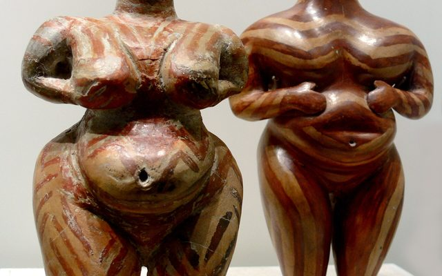
Hacılar HöyükBurdur · Neolitik / Kalkolitik Karahantepe ÖrenyeriŞanlıurfa · Neolitik
Karahantepe ÖrenyeriŞanlıurfa · Neolitik Karain MağarasıAntalya · Paleolitik
Karain MağarasıAntalya · Paleolitik Tekkeköy MağaralarıSamsun · Paleolitik
Tekkeköy MağaralarıSamsun · Paleolitik Yeşilova Höyüğüİzmir · Neolitik
Yeşilova Höyüğüİzmir · Neolitik Yumuktepe HöyüğüMersin · Neolitik – Ortaçağ
Yumuktepe HöyüğüMersin · Neolitik – Ortaçağ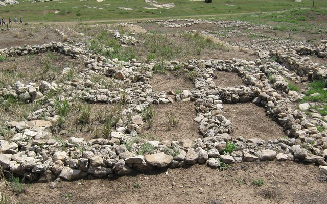
Çayönü HöyüğüDiyarbakır · Neolitik Öküzini MağarasıAntalya · PaleolitikKırklareli MüzesiKırklareli · Tarih Öncesi / TrakŞanlıurfa Arkeoloji MüzesiŞanlıurfa · Neolitik – Osmanlı
Öküzini MağarasıAntalya · PaleolitikKırklareli MüzesiKırklareli · Tarih Öncesi / TrakŞanlıurfa Arkeoloji MüzesiŞanlıurfa · Neolitik – OsmanlıTunç Çağı ve Hititler
MÖ 3000 – 1200 · 38 yer
Arslantepe ÖrenyeriMalatya · Kalkolitik / Tunç / Geç Hitit HattuşaÇorum · Hitit
HattuşaÇorum · Hitit TroyaÇanakkale · Tunç Çağı / Roma
TroyaÇanakkale · Tunç Çağı / Roma AcemhöyükAksaray · Tunç Çağı / Asur Ticaret
AcemhöyükAksaray · Tunç Çağı / Asur Ticaret Afyonkarahisar KalesiAfyonkarahisar · Hitit – Osmanlı
Afyonkarahisar KalesiAfyonkarahisar · Hitit – Osmanlı Alacahöyük Müzesi ve ÖrenyeriÇorum · Tunç Çağı / Hitit
Alacahöyük Müzesi ve ÖrenyeriÇorum · Tunç Çağı / Hitit Alişar HöyüğüYozgat · Tunç Çağı / Hitit
Alişar HöyüğüYozgat · Tunç Çağı / Hitit Aççana Höyük (Alalah)Hatay · Tunç Çağı
Aççana Höyük (Alalah)Hatay · Tunç Çağı Beycesultan HöyüğüDenizli · Tunç Çağı
Beycesultan HöyüğüDenizli · Tunç Çağı Dicle Tüneli (Birkleyn Mağaraları)Diyarbakır · Asur / Urartu
Dicle Tüneli (Birkleyn Mağaraları)Diyarbakır · Asur / Urartu Eflatunpınar Hitit Su AnıtıKonya · Hitit
Eflatunpınar Hitit Su AnıtıKonya · Hitit Enkomi (Alasya) ÖrenyeriGazimağusa · Tunç Çağı
Enkomi (Alasya) ÖrenyeriGazimağusa · Tunç Çağı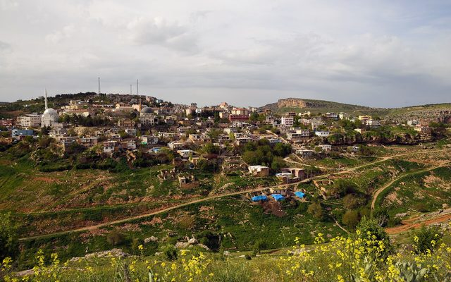
Eğil Kalesi ve Peygamber TürbeleriDiyarbakır · Asur – Osmanlı Fasıllar AnıtıKonya · Hitit
Fasıllar AnıtıKonya · Hitit Fethiye Tlos ÖrenyeriMuğla · Tunç Çağı – Osmanlı
Fethiye Tlos ÖrenyeriMuğla · Tunç Çağı – Osmanlı Harran ÖrenyeriŞanlıurfa · Tunç Çağı – Ortaçağ
Harran ÖrenyeriŞanlıurfa · Tunç Çağı – Ortaçağ Iassos ÖrenyeriMuğla · Tunç Çağı – Bizans
Iassos ÖrenyeriMuğla · Tunç Çağı – Bizans Kaman Kalehöyük Arkeoloji MüzesiKırşehir · Tunç Çağı / Demir Çağı
Kaman Kalehöyük Arkeoloji MüzesiKırşehir · Tunç Çağı / Demir Çağı Karabel Kaya Kabartmasıİzmir · Hitit (Arzawa)
Karabel Kaya Kabartmasıİzmir · Hitit (Arzawa) Karatepe Aslantaş Müzesi ve ÖrenyeriOsmaniye · Geç Hitit (MÖ 8. yy)
Karatepe Aslantaş Müzesi ve ÖrenyeriOsmaniye · Geç Hitit (MÖ 8. yy) Karkamış Antik KentiGaziantep · Geç Hitit / Demir Çağı
Karkamış Antik KentiGaziantep · Geç Hitit / Demir Çağı Kültepe ÖrenyeriKayseri · Tunç ÇağıMaşat HöyükTokat · Hitit
Kültepe ÖrenyeriKayseri · Tunç ÇağıMaşat HöyükTokat · Hitit Oluz HöyükAmasya · Tunç Çağı / Pers
Oluz HöyükAmasya · Tunç Çağı / Pers Oylum HöyükKilis · Tunç Çağı
Oylum HöyükKilis · Tunç Çağı Salamis ÖrenyeriGazimağusa · Tunç Çağı / Roma / Bizans
Salamis ÖrenyeriGazimağusa · Tunç Çağı / Roma / Bizans Sarissa (Kuşaklı) Hitit KentiSivas · Hitit
Sarissa (Kuşaklı) Hitit KentiSivas · Hitit Sirkeli Höyüğü ve Muwatalli KabartmasıAdana · Hitit
Sirkeli Höyüğü ve Muwatalli KabartmasıAdana · Hitit Tarsus GözlükuleMersin · Tunç Çağı – Roma
Tarsus GözlükuleMersin · Tunç Çağı – Roma Tilmen HöyükGaziantep · Tunç Çağı
Tilmen HöyükGaziantep · Tunç Çağı Yesemek ÖrenyeriGaziantep · Geç HititYumuktepe HöyüğüMersin · Neolitik – Ortaçağ
Yesemek ÖrenyeriGaziantep · Geç HititYumuktepe HöyüğüMersin · Neolitik – Ortaçağ Zincirli Höyük (Sam'al)Gaziantep · Geç Hitit / Arami
Zincirli Höyük (Sam'al)Gaziantep · Geç Hitit / Arami ŞapinuvaÇorum · Hitit
ŞapinuvaÇorum · Hitit Şar (Komana) Antik KentiAdana · Hitit / Roma
Şar (Komana) Antik KentiAdana · Hitit / Roma Bodrum Sualtı Arkeoloji MüzesiMuğla · Tunç Çağı – Osmanlı
Bodrum Sualtı Arkeoloji MüzesiMuğla · Tunç Çağı – Osmanlı Boğazköy MüzesiÇorum · HititŞanlıurfa Arkeoloji MüzesiŞanlıurfa · Neolitik – Osmanlı
Boğazköy MüzesiÇorum · HititŞanlıurfa Arkeoloji MüzesiŞanlıurfa · Neolitik – OsmanlıDemir Çağı Krallıkları
MÖ 1200 – 550 · 79 yer
Arslantepe ÖrenyeriMalatya · Kalkolitik / Tunç / Geç Hitit Xanthos ÖrenyeriAntalya · Likya
Xanthos ÖrenyeriAntalya · Likya Gordion MüzesiAnkara · FrigAfyonkarahisar KalesiAfyonkarahisar · Hitit – OsmanlıAkalissos Antik KentiAntalya · Likya / Roma
Gordion MüzesiAnkara · FrigAfyonkarahisar KalesiAfyonkarahisar · Hitit – OsmanlıAkalissos Antik KentiAntalya · Likya / Roma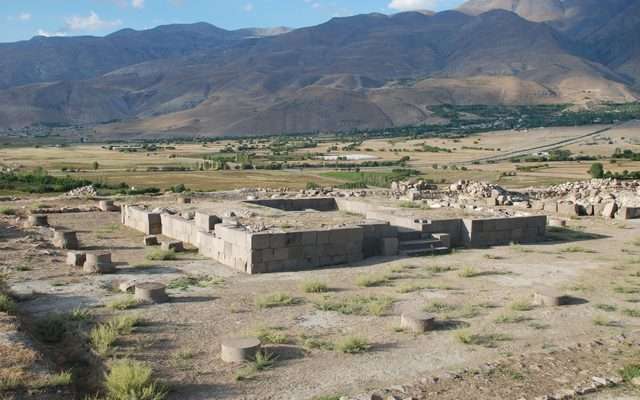
Altıntepe Urartu KalesiErzincan · Urartu Amintas Kaya MezarıMuğla · Likya (MÖ 4. yy)
Amintas Kaya MezarıMuğla · Likya (MÖ 4. yy) Aperlai Antik KentiAntalya · Likya / Roma
Aperlai Antik KentiAntalya · Likya / Roma Apollonia (Likya) Antik KentiAntalya · LikyaArneai Antik KentiAntalya · Likya / Roma
Apollonia (Likya) Antik KentiAntalya · LikyaArneai Antik KentiAntalya · Likya / Roma Arsada Antik KentiMuğla · Likya
Arsada Antik KentiMuğla · Likya Arykanda ÖrenyeriAntalya · Likya / Roma
Arykanda ÖrenyeriAntalya · Likya / Roma Ayanis KalesiVan · Urartu
Ayanis KalesiVan · Urartu Bin Tepe Lidya TümülüsleriManisa · Lidya
Bin Tepe Lidya TümülüsleriManisa · Lidya Daskyleion Antik KentiBalıkesir · Pers / HelenistikDicle Tüneli (Birkleyn Mağaraları)Diyarbakır · Asur / UrartuEğil Kalesi ve Peygamber TürbeleriDiyarbakır · Asur – Osmanlı
Daskyleion Antik KentiBalıkesir · Pers / HelenistikDicle Tüneli (Birkleyn Mağaraları)Diyarbakır · Asur / UrartuEğil Kalesi ve Peygamber TürbeleriDiyarbakır · Asur – Osmanlı Fethiye Letoon ÖrenyeriMuğla · Likya / Roma
Fethiye Letoon ÖrenyeriMuğla · Likya / Roma Fethiye Pınara ÖrenyeriMuğla · Likya / RomaFethiye Tlos ÖrenyeriMuğla · Tunç Çağı – OsmanlıGagae Antik KentiAntalya · Likya / Bizans
Fethiye Pınara ÖrenyeriMuğla · Likya / RomaFethiye Tlos ÖrenyeriMuğla · Tunç Çağı – OsmanlıGagae Antik KentiAntalya · Likya / Bizans Gerga Antik KentiAydın · Karya
Gerga Antik KentiAydın · Karya Harput KalesiElâzığ · Urartu / OrtaçağHarran ÖrenyeriŞanlıurfa · Tunç Çağı – OrtaçağHyllarima Antik KentiMuğla · Karya / HelenistikIassos ÖrenyeriMuğla · Tunç Çağı – Bizans
Harput KalesiElâzığ · Urartu / OrtaçağHarran ÖrenyeriŞanlıurfa · Tunç Çağı – OrtaçağHyllarima Antik KentiMuğla · Karya / HelenistikIassos ÖrenyeriMuğla · Tunç Çağı – Bizans Idebessos Antik KentiAntalya · Likya / Roma
Idebessos Antik KentiAntalya · Likya / Roma Kadyanda Antik KentiMuğla · Likya / RomaKaman Kalehöyük Arkeoloji MüzesiKırşehir · Tunç Çağı / Demir ÇağıKandyba Antik KentiAntalya · LikyaKaratepe Aslantaş Müzesi ve ÖrenyeriOsmaniye · Geç Hitit (MÖ 8. yy)Karkamış Antik KentiGaziantep · Geç Hitit / Demir Çağı
Kadyanda Antik KentiMuğla · Likya / RomaKaman Kalehöyük Arkeoloji MüzesiKırşehir · Tunç Çağı / Demir ÇağıKandyba Antik KentiAntalya · LikyaKaratepe Aslantaş Müzesi ve ÖrenyeriOsmaniye · Geç Hitit (MÖ 8. yy)Karkamış Antik KentiGaziantep · Geç Hitit / Demir Çağı Kaunos ÖrenyeriMuğla · Karya / Helenistik / Roma
Kaunos ÖrenyeriMuğla · Karya / Helenistik / Roma Kekova Batık KentAntalya · Likya / Roma
Kekova Batık KentAntalya · Likya / Roma Keramos Antik KentiMuğla · Karya / Roma
Keramos Antik KentiMuğla · Karya / Roma Kerkenes Antik KentiYozgat · Frig / Demir ÇağıKorydalla Antik KentiAntalya · Likya / RomaKral Mezarları Müzesi ve ÖrenyeriGazimağusa · Demir Çağı (MÖ 8–7. yy)
Kerkenes Antik KentiYozgat · Frig / Demir ÇağıKorydalla Antik KentiAntalya · Likya / RomaKral Mezarları Müzesi ve ÖrenyeriGazimağusa · Demir Çağı (MÖ 8–7. yy) Kyaneai Antik KentiAntalya · Likya / Roma
Kyaneai Antik KentiAntalya · Likya / Roma Labraunda ÖrenyeriMuğla · Karya / Helenistik
Labraunda ÖrenyeriMuğla · Karya / Helenistik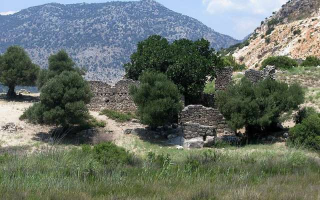
Likya Uygarlıkları Müzesi ve Andrıake ÖrenyeriAntalya · Likya / Roma Limyra ÖrenyeriAntalya · Likya / Roma
Limyra ÖrenyeriAntalya · Likya / Roma Mher Kapısı (Meher Kapı)Van · Urartu
Mher Kapısı (Meher Kapı)Van · Urartu Midas Yazılıkaya ÖrenyeriEskişehir · FrigMilas Uzunyuva (Hekatomnos Anıt Mezarı)Muğla · Karya
Midas Yazılıkaya ÖrenyeriEskişehir · FrigMilas Uzunyuva (Hekatomnos Anıt Mezarı)Muğla · Karya Milas Uzunyuva Anıt Mezarı ve Müze KompleksiMuğla · Karya (MÖ 4. yy)
Milas Uzunyuva Anıt Mezarı ve Müze KompleksiMuğla · Karya (MÖ 4. yy) Myra ÖrenyeriAntalya · Likya / RomaOinoanda Antik KentiMuğla · Likya / RomaOluz HöyükAmasya · Tunç Çağı / Pers
Myra ÖrenyeriAntalya · Likya / RomaOinoanda Antik KentiMuğla · Likya / RomaOluz HöyükAmasya · Tunç Çağı / Pers Olympos ÖrenyeriAntalya · Likya / Roma
Olympos ÖrenyeriAntalya · Likya / Roma Patara ÖrenyeriAntalya · Likya / Roma
Patara ÖrenyeriAntalya · Likya / Roma Pessinus ÖrenyeriEskişehir · Frig / Helenistik / Roma
Pessinus ÖrenyeriEskişehir · Frig / Helenistik / Roma Phaselis ÖrenyeriAntalya · Likya / Roma
Phaselis ÖrenyeriAntalya · Likya / Roma Phellos Antik KentiAntalya · Likya
Phellos Antik KentiAntalya · Likya Pydnai KalesiMuğla · Likya / Helenistik
Pydnai KalesiMuğla · Likya / Helenistik Rhodiapolis Antik KentiAntalya · Likya / Roma
Rhodiapolis Antik KentiAntalya · Likya / Roma Sardes ÖrenyeriManisa · Lidya / Roma
Sardes ÖrenyeriManisa · Lidya / Roma Sebeda Antik KentiAntalya · Likya
Sebeda Antik KentiAntalya · Likya Sidyma Antik KentiMuğla · Likya / Roma
Sidyma Antik KentiMuğla · Likya / Roma Simena ÖrenyeriAntalya · Likya / Bizans
Simena ÖrenyeriAntalya · Likya / Bizans Sura Antik KentiAntalya · LikyaTarsus GözlükuleMersin · Tunç Çağı – Roma
Sura Antik KentiAntalya · LikyaTarsus GözlükuleMersin · Tunç Çağı – Roma Teimiussa Antik KentiAntalya · LikyaTrysa Antik KentiAntalya · Likya
Teimiussa Antik KentiAntalya · LikyaTrysa Antik KentiAntalya · Likya Tyberissos Antik KentiAntalya · Likya
Tyberissos Antik KentiAntalya · Likya Van KalesiVan · Urartu – OsmanlıYesemek ÖrenyeriGaziantep · Geç HititYumuktepe HöyüğüMersin · Neolitik – Ortaçağ
Van KalesiVan · Urartu – OsmanlıYesemek ÖrenyeriGaziantep · Geç HititYumuktepe HöyüğüMersin · Neolitik – Ortaçağ YılankaleAdana · Kilikya Ermeni KrallığıZincirli Höyük (Sam'al)Gaziantep · Geç Hitit / Arami
YılankaleAdana · Kilikya Ermeni KrallığıZincirli Höyük (Sam'al)Gaziantep · Geç Hitit / Arami Çavuştepe KalesiVan · Urartu (MÖ 8–7. yy)Bodrum Sualtı Arkeoloji MüzesiMuğla · Tunç Çağı – Osmanlı
Çavuştepe KalesiVan · Urartu (MÖ 8–7. yy)Bodrum Sualtı Arkeoloji MüzesiMuğla · Tunç Çağı – Osmanlı Erzincan MüzesiErzincan · Urartu / Çok DönemliFethiye MüzesiMuğla · Likya / RomaKırklareli MüzesiKırklareli · Tarih Öncesi / Trak
Erzincan MüzesiErzincan · Urartu / Çok DönemliFethiye MüzesiMuğla · Likya / RomaKırklareli MüzesiKırklareli · Tarih Öncesi / Trak Muğla Bodrum Mausoleium Anıt MüzesiMuğla · Karya (MÖ 4. yy)Uşak MüzesiUşak · Lidya / Çok Dönemli
Muğla Bodrum Mausoleium Anıt MüzesiMuğla · Karya (MÖ 4. yy)Uşak MüzesiUşak · Lidya / Çok Dönemli Van MüzesiVan · Urartu / Çok DönemliŞanlıurfa Arkeoloji MüzesiŞanlıurfa · Neolitik – Osmanlı
Van MüzesiVan · Urartu / Çok DönemliŞanlıurfa Arkeoloji MüzesiŞanlıurfa · Neolitik – OsmanlıKlasik ve Helenistik Dönem
MÖ 550 – 30 · 104 yer
 Afrodisias Müzesi ve ÖrenyeriAydın · Helenistik / Roma
Afrodisias Müzesi ve ÖrenyeriAydın · Helenistik / Roma Bergama Akropolüİzmir · Helenistik / Roma
Bergama Akropolüİzmir · Helenistik / Roma Bergama Asklepion Örenyeriİzmir · Helenistik / Roma
Bergama Asklepion Örenyeriİzmir · Helenistik / Roma Efesİzmir · Helenistik / Roma
Efesİzmir · Helenistik / Roma Hierapolis (Pamukkale) ÖrenyeriDenizli · Helenistik / Roma
Hierapolis (Pamukkale) ÖrenyeriDenizli · Helenistik / Roma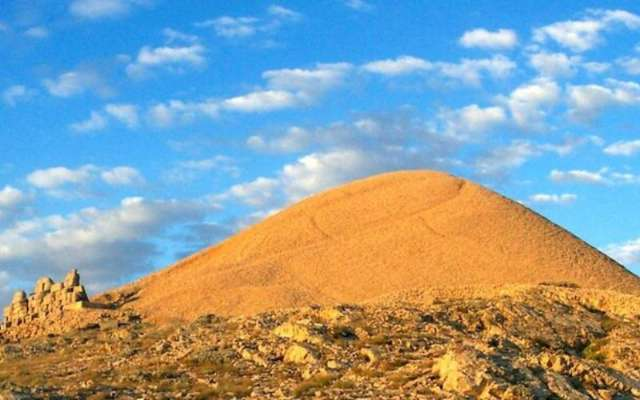
Nemrut DağıAdıyaman · Helenistik (Kommagene)Afyonkarahisar KalesiAfyonkarahisar · Hitit – Osmanlı Agora Örenyeriİzmir · Helenistik / RomaAigai ÖrenyeriManisa · Helenistik / Roma
Agora Örenyeriİzmir · Helenistik / RomaAigai ÖrenyeriManisa · Helenistik / Roma Alabanda ÖrenyeriAydın · Helenistik / Roma
Alabanda ÖrenyeriAydın · Helenistik / Roma Alaşehir ÖrenyeriManisa · Helenistik / Bizans
Alaşehir ÖrenyeriManisa · Helenistik / Bizans Alexandria Troas ÖrenyeriÇanakkale · Helenistik / Roma
Alexandria Troas ÖrenyeriÇanakkale · Helenistik / Roma Alinda ÖrenyeriAydın · Helenistik / Roma
Alinda ÖrenyeriAydın · Helenistik / Roma Amisos Tepesi (Amisos Antik Kenti)Samsun · Helenistik
Amisos Tepesi (Amisos Antik Kenti)Samsun · Helenistik Amos Antik KentiMuğla · HelenistikAmyzon Antik KentiAydın · Helenistik
Amos Antik KentiMuğla · HelenistikAmyzon Antik KentiAydın · Helenistik Antalya Syedra Antik KentiAntalya · Helenistik / Roma
Antalya Syedra Antik KentiAntalya · Helenistik / Roma Antiocheia ÖrenyeriIsparta · Helenistik / Roma
Antiocheia ÖrenyeriIsparta · Helenistik / Roma Antiphellos Antik Tiyatrosu (Kaş)Antalya · Helenistik / Roma
Antiphellos Antik Tiyatrosu (Kaş)Antalya · Helenistik / Roma Apollon Smintheion ÖrenyeriÇanakkale · Helenistik
Apollon Smintheion ÖrenyeriÇanakkale · Helenistik Arsemeia ÖrenyeriAdıyaman · Helenistik (Kommagene)
Arsemeia ÖrenyeriAdıyaman · Helenistik (Kommagene) Assos ÖrenyeriÇanakkale · Arkaik / Helenistik
Assos ÖrenyeriÇanakkale · Arkaik / Helenistik Bargylia Antik KentiMuğla · Helenistik / Roma
Bargylia Antik KentiMuğla · Helenistik / Roma Blaundos ÖrenyeriUşak · Helenistik / Roma
Blaundos ÖrenyeriUşak · Helenistik / Roma Bodrum Antik TiyatrosuMuğla · Helenistik / RomaDaskyleion Antik KentiBalıkesir · Pers / Helenistik
Bodrum Antik TiyatrosuMuğla · Helenistik / RomaDaskyleion Antik KentiBalıkesir · Pers / Helenistik Denizli Tripolis ÖrenyeriDenizli · Helenistik / Roma
Denizli Tripolis ÖrenyeriDenizli · Helenistik / Roma Didim Apollon TapınağıAydın · Helenistik / RomaDülük (Doliche) Antik KentiGaziantep · Roma / Kommagene
Didim Apollon TapınağıAydın · Helenistik / RomaDülük (Doliche) Antik KentiGaziantep · Roma / Kommagene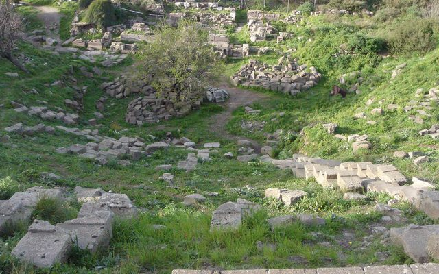
Erythrai Antik Kentiİzmir · Helenistik / Roma Eski Smyrna (Bayraklı Höyüğü)İzmir · ArkaikEğil Kalesi ve Peygamber TürbeleriDiyarbakır · Asur – OsmanlıFethiye Tlos ÖrenyeriMuğla · Tunç Çağı – OsmanlıFilyos(Tios) ÖrenyeriZonguldak · Helenistik – Bizans
Eski Smyrna (Bayraklı Höyüğü)İzmir · ArkaikEğil Kalesi ve Peygamber TürbeleriDiyarbakır · Asur – OsmanlıFethiye Tlos ÖrenyeriMuğla · Tunç Çağı – OsmanlıFilyos(Tios) ÖrenyeriZonguldak · Helenistik – Bizans Gölyazı (Apollonia ad Rhyndacum)Bursa · Helenistik / RomaHarran ÖrenyeriŞanlıurfa · Tunç Çağı – Ortaçağ
Gölyazı (Apollonia ad Rhyndacum)Bursa · Helenistik / RomaHarran ÖrenyeriŞanlıurfa · Tunç Çağı – Ortaçağ Herakleia (Latmos) Antik KentiMuğla · Helenistik / Bizans
Herakleia (Latmos) Antik KentiMuğla · Helenistik / Bizans Herakleia Salbake Antik KentiDenizli · Helenistik / RomaHyllarima Antik KentiMuğla · Karya / HelenistikIassos ÖrenyeriMuğla · Tunç Çağı – BizansKadifekaleİzmir · Helenistik / Osmanlı
Herakleia Salbake Antik KentiDenizli · Helenistik / RomaHyllarima Antik KentiMuğla · Karya / HelenistikIassos ÖrenyeriMuğla · Tunç Çağı – BizansKadifekaleİzmir · Helenistik / Osmanlı Kahta Yenikale ÖrenyeriAdıyaman · Kommagene / Ortaçağ
Kahta Yenikale ÖrenyeriAdıyaman · Kommagene / Ortaçağ Kanlı Divane ÖrenyeriMersin · Helenistik / Roma / Bizans
Kanlı Divane ÖrenyeriMersin · Helenistik / Roma / Bizans Kanlıdivane (Kanytelis)Mersin · Helenistik / Bizans
Kanlıdivane (Kanytelis)Mersin · Helenistik / Bizans Kapılıkaya Kaya MezarıÇorum · Paflagonya / Helenistik
Kapılıkaya Kaya MezarıÇorum · Paflagonya / Helenistik Karakuş TümülüsüAdıyaman · Kommagene
Karakuş TümülüsüAdıyaman · Kommagene Kastabala ÖrenyeriOsmaniye · Helenistik / Roma / OrtaçağKaunos ÖrenyeriMuğla · Karya / Helenistik / Roma
Kastabala ÖrenyeriOsmaniye · Helenistik / Roma / OrtaçağKaunos ÖrenyeriMuğla · Karya / Helenistik / Roma Klaros Örenyeriİzmir · Arkaik / RomaKlazomenai Örenyeriİzmir · Arkaik
Klaros Örenyeriİzmir · Arkaik / RomaKlazomenai Örenyeriİzmir · Arkaik Kolophon Antik Kentiİzmir · Arkaik / HelenistikKomana Pontika Antik KentiTokat · Helenistik / Roma
Kolophon Antik Kentiİzmir · Arkaik / HelenistikKomana Pontika Antik KentiTokat · Helenistik / Roma Kyme Antik Kentiİzmir · Arkaik / Roma
Kyme Antik Kentiİzmir · Arkaik / Roma Kyzikos Antik KentiBalıkesir · Helenistik / RomaLabraunda ÖrenyeriMuğla · Karya / Helenistik
Kyzikos Antik KentiBalıkesir · Helenistik / RomaLabraunda ÖrenyeriMuğla · Karya / Helenistik Lagina ÖrenyeriMuğla · Helenistik / Roma
Lagina ÖrenyeriMuğla · Helenistik / Roma Laodikeia ÖrenyeriDenizli · Helenistik / Roma
Laodikeia ÖrenyeriDenizli · Helenistik / Roma Loryma Antik KentiMuğla · Helenistik
Loryma Antik KentiMuğla · Helenistik Magarsus Antik KentiAdana · Helenistik / Roma
Magarsus Antik KentiAdana · Helenistik / Roma Magnesia ÖrenyeriAydın · Helenistik / Roma
Magnesia ÖrenyeriAydın · Helenistik / Roma Manisa Akhisar Müzesi ve Akhisar Tepe MezarlığıManisa · Helenistik / Roma
Manisa Akhisar Müzesi ve Akhisar Tepe MezarlığıManisa · Helenistik / Roma Metropolis Örenyeriİzmir · Helenistik / Roma
Metropolis Örenyeriİzmir · Helenistik / Roma Milas Euromos ÖrenyeriMuğla · Helenistik / Roma
Milas Euromos ÖrenyeriMuğla · Helenistik / Roma Milet ÖrenyeriAydın · Arkaik / Roma
Milet ÖrenyeriAydın · Arkaik / Roma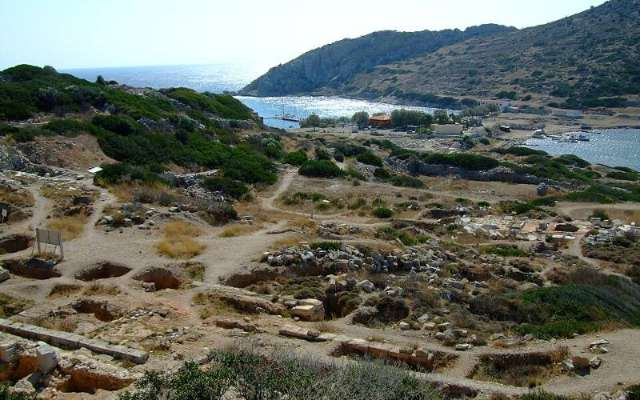
Muğla Knidos ÖrenyeriMuğla · Klasik / Helenistik Myndos Antik KentiMuğla · HelenistikNeandreia Antik KentiÇanakkale · Arkaik / Helenistik
Myndos Antik KentiMuğla · HelenistikNeandreia Antik KentiÇanakkale · Arkaik / Helenistik Notion Antik Kentiİzmir · Helenistik / Roma
Notion Antik Kentiİzmir · Helenistik / Roma Nysa Sultanhisar ÖrenyeriAydın · Helenistik / Roma
Nysa Sultanhisar ÖrenyeriAydın · Helenistik / Roma Olba Antik KentiMersin · Helenistik / Roma
Olba Antik KentiMersin · Helenistik / Roma Parion Antik KentiÇanakkale · Helenistik / RomaPednelissos Antik KentiAntalya · Helenistik / Roma
Parion Antik KentiÇanakkale · Helenistik / RomaPednelissos Antik KentiAntalya · Helenistik / Roma Perge ÖrenyeriAntalya · Helenistik / RomaPerperene Antik KentiBalıkesir · Helenistik / Roma
Perge ÖrenyeriAntalya · Helenistik / RomaPerperene Antik KentiBalıkesir · Helenistik / Roma Perre ÖrenyeriAdıyaman · Kommagene / RomaPessinus ÖrenyeriEskişehir · Frig / Helenistik / Roma
Perre ÖrenyeriAdıyaman · Kommagene / RomaPessinus ÖrenyeriEskişehir · Frig / Helenistik / Roma Phokaia (Foça) Antik Kentiİzmir · Arkaik / Roma
Phokaia (Foça) Antik Kentiİzmir · Arkaik / Roma Pisidia Antiokheia Antik KentiIsparta · Helenistik / Roma
Pisidia Antiokheia Antik KentiIsparta · Helenistik / Roma Priene ÖrenyeriAydın · HelenistikPydnai KalesiMuğla · Likya / Helenistik
Priene ÖrenyeriAydın · HelenistikPydnai KalesiMuğla · Likya / Helenistik Sagalassos ÖrenyeriBurdur · Helenistik / Roma
Sagalassos ÖrenyeriBurdur · Helenistik / Roma Sedir Adası ÖrenyeriMuğla · Helenistik / Roma
Sedir Adası ÖrenyeriMuğla · Helenistik / Roma Seleukeia (Pamfilya) Antik KentiAntalya · Helenistik / Roma
Seleukeia (Pamfilya) Antik KentiAntalya · Helenistik / Roma Selge Antik KentiAntalya · Helenistik / Roma
Selge Antik KentiAntalya · Helenistik / Roma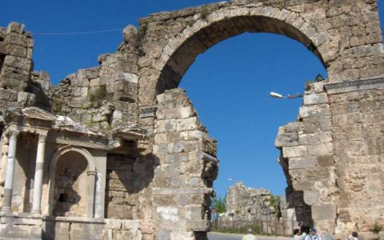
Side ÖrenyeriAntalya · Helenistik / Roma Sillyon Antik KentiAntalya · Helenistik / RomaSofraz Anıt MezarıAdıyaman · Helenistik / Roma
Sillyon Antik KentiAntalya · Helenistik / RomaSofraz Anıt MezarıAdıyaman · Helenistik / Roma Soli Pompeiopolis Antik KentiMersin · Helenistik / Roma
Soli Pompeiopolis Antik KentiMersin · Helenistik / Roma Soli ÖrenyeriLefke · Arkaik / Roma
Soli ÖrenyeriLefke · Arkaik / Roma Stratonikeia ÖrenyeriMuğla · Helenistik – OsmanlıTarsus GözlükuleMersin · Tunç Çağı – Roma
Stratonikeia ÖrenyeriMuğla · Helenistik – OsmanlıTarsus GözlükuleMersin · Tunç Çağı – Roma Teos Örenyeriİzmir · Arkaik / Helenistik
Teos Örenyeriİzmir · Arkaik / Helenistik Termessos ÖrenyeriAntalya · Helenistik / Roma
Termessos ÖrenyeriAntalya · Helenistik / Roma Tralleis Antik KentiAydın · Helenistik / Roma
Tralleis Antik KentiAydın · Helenistik / Roma Uzuncaburç ÖrenyeriMersin · Helenistik / RomaVan KalesiVan · Urartu – Osmanlı
Uzuncaburç ÖrenyeriMersin · Helenistik / RomaVan KalesiVan · Urartu – Osmanlı Vouni SarayıLefke · Klasik (MÖ 5. yy)Yumuktepe HöyüğüMersin · Neolitik – Ortaçağ
Vouni SarayıLefke · Klasik (MÖ 5. yy)Yumuktepe HöyüğüMersin · Neolitik – Ortaçağ Zeugma ÖrenyeriGaziantep · Helenistik / Roma
Zeugma ÖrenyeriGaziantep · Helenistik / Roma Çatıören Antik YerleşimiMersin · Helenistik / RomaÇevlik ÖrenyeriHatay · Helenistik / Roma
Çatıören Antik YerleşimiMersin · Helenistik / RomaÇevlik ÖrenyeriHatay · Helenistik / Roma Şanlıurfa KalesiŞanlıurfa · Helenistik – OrtaçağBodrum Sualtı Arkeoloji MüzesiMuğla · Tunç Çağı – OsmanlıŞanlıurfa Arkeoloji MüzesiŞanlıurfa · Neolitik – Osmanlı
Şanlıurfa KalesiŞanlıurfa · Helenistik – OrtaçağBodrum Sualtı Arkeoloji MüzesiMuğla · Tunç Çağı – OsmanlıŞanlıurfa Arkeoloji MüzesiŞanlıurfa · Neolitik – OsmanlıRoma Dönemi
MÖ 30 – MS 330 · 187 yer
Afrodisias Müzesi ve ÖrenyeriAydın · Helenistik / RomaBergama Akropolüİzmir · Helenistik / RomaBergama Asklepion Örenyeriİzmir · Helenistik / Roma Bergama Kızılavluİzmir · Roma / BizansEfesİzmir · Helenistik / RomaHierapolis (Pamukkale) ÖrenyeriDenizli · Helenistik / RomaTroyaÇanakkale · Tunç Çağı / Roma
Bergama Kızılavluİzmir · Roma / BizansEfesİzmir · Helenistik / RomaHierapolis (Pamukkale) ÖrenyeriDenizli · Helenistik / RomaTroyaÇanakkale · Tunç Çağı / Roma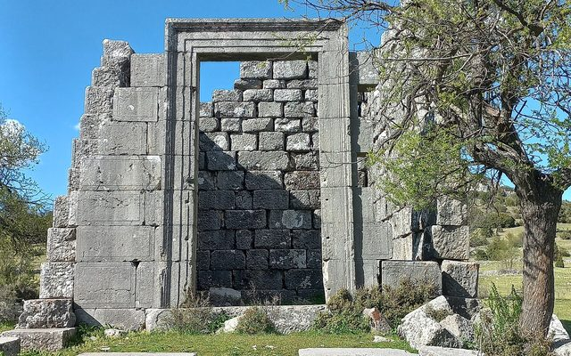
Adada Antik KentiIsparta · Roma AdamkayalarMersin · RomaAfyonkarahisar KalesiAfyonkarahisar · Hitit – OsmanlıAgora Örenyeriİzmir · Helenistik / RomaAigai ÖrenyeriManisa · Helenistik / Roma
AdamkayalarMersin · RomaAfyonkarahisar KalesiAfyonkarahisar · Hitit – OsmanlıAgora Örenyeriİzmir · Helenistik / RomaAigai ÖrenyeriManisa · Helenistik / Roma Aizanoi ÖrenyeriKütahya · RomaAkalissos Antik KentiAntalya · Likya / Roma
Aizanoi ÖrenyeriKütahya · RomaAkalissos Antik KentiAntalya · Likya / Roma Akkale Ören YeriMersin · Roma / BizansAlabanda ÖrenyeriAydın · Helenistik / RomaAlexandria Troas ÖrenyeriÇanakkale · Helenistik / RomaAlinda ÖrenyeriAydın · Helenistik / Roma
Akkale Ören YeriMersin · Roma / BizansAlabanda ÖrenyeriAydın · Helenistik / RomaAlexandria Troas ÖrenyeriÇanakkale · Helenistik / RomaAlinda ÖrenyeriAydın · Helenistik / Roma Amorium Antik KentiAfyonkarahisar · Roma / Bizans
Amorium Antik KentiAfyonkarahisar · Roma / Bizans Anavarza ÖrenyeriAdana · Roma / Bizans
Anavarza ÖrenyeriAdana · Roma / Bizans Anemurium ÖrenyeriMersin · Roma / Bizans
Anemurium ÖrenyeriMersin · Roma / Bizans Ankara KalesiAnkara · Roma – Osmanlı
Ankara KalesiAnkara · Roma – Osmanlı Ankara Roma TiyatrosuAnkara · RomaAntalya Syedra Antik KentiAntalya · Helenistik / Roma
Ankara Roma TiyatrosuAnkara · RomaAntalya Syedra Antik KentiAntalya · Helenistik / Roma Antandros Antik KentiBalıkesir · RomaAntiocheia ÖrenyeriIsparta · Helenistik / Roma
Antandros Antik KentiBalıkesir · RomaAntiocheia ÖrenyeriIsparta · Helenistik / Roma Antiokheia ad Cragum Antik KentiAntalya · RomaAntiphellos Antik Tiyatrosu (Kaş)Antalya · Helenistik / RomaAperlai Antik KentiAntalya · Likya / Roma
Antiokheia ad Cragum Antik KentiAntalya · RomaAntiphellos Antik Tiyatrosu (Kaş)Antalya · Helenistik / RomaAperlai Antik KentiAntalya · Likya / Roma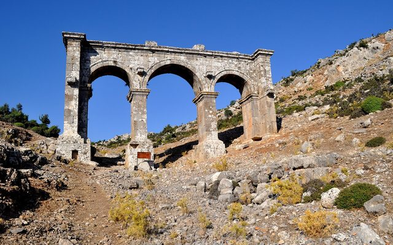
Ariassos Antik KentiAntalya · RomaArneai Antik KentiAntalya · Likya / RomaArykanda ÖrenyeriAntalya · Likya / Roma AspendosAntalya · Roma
AspendosAntalya · Roma Augustus TapınağıAnkara · RomaBalbura Antik KentiBurdur · RomaBargylia Antik KentiMuğla · Helenistik / RomaBlaundos ÖrenyeriUşak · Helenistik / RomaBodrum Antik TiyatrosuMuğla · Helenistik / Roma
Augustus TapınağıAnkara · RomaBalbura Antik KentiBurdur · RomaBargylia Antik KentiMuğla · Helenistik / RomaBlaundos ÖrenyeriUşak · Helenistik / RomaBodrum Antik TiyatrosuMuğla · Helenistik / Roma Bozdoğan Kemeriİstanbul · Roma
Bozdoğan Kemeriİstanbul · Roma Cendere KöprüsüAdıyaman · RomaDenizli Tripolis ÖrenyeriDenizli · Helenistik / RomaDerbe HöyüğüKaraman · Roma / BizansDidim Apollon TapınağıAydın · Helenistik / Roma
Cendere KöprüsüAdıyaman · RomaDenizli Tripolis ÖrenyeriDenizli · Helenistik / RomaDerbe HöyüğüKaraman · Roma / BizansDidim Apollon TapınağıAydın · Helenistik / Roma Diyarbakır SurlarıDiyarbakır · Roma – OsmanlıDülük (Doliche) Antik KentiGaziantep · Roma / Kommagene
Diyarbakır SurlarıDiyarbakır · Roma – OsmanlıDülük (Doliche) Antik KentiGaziantep · Roma / Kommagene Edirne Makedonya KulesiEdirne · Roma / Bizans / Osmanlı
Edirne Makedonya KulesiEdirne · Roma / Bizans / Osmanlı Efes Örenyeri-Yamaçevlerİzmir · Roma / Bizans
Efes Örenyeri-Yamaçevlerİzmir · Roma / Bizans Elaiussa Sebaste Antik KentiMersin · RomaErythrai Antik Kentiİzmir · Helenistik / RomaEtenna Antik KentiAntalya · Roma / BizansEğil Kalesi ve Peygamber TürbeleriDiyarbakır · Asur – OsmanlıFethiye Letoon ÖrenyeriMuğla · Likya / RomaFethiye Pınara ÖrenyeriMuğla · Likya / RomaFethiye Tlos ÖrenyeriMuğla · Tunç Çağı – OsmanlıFilyos(Tios) ÖrenyeriZonguldak · Helenistik – BizansGermanicia Mozaikli AlanKahramanmaraş · Roma
Elaiussa Sebaste Antik KentiMersin · RomaErythrai Antik Kentiİzmir · Helenistik / RomaEtenna Antik KentiAntalya · Roma / BizansEğil Kalesi ve Peygamber TürbeleriDiyarbakır · Asur – OsmanlıFethiye Letoon ÖrenyeriMuğla · Likya / RomaFethiye Pınara ÖrenyeriMuğla · Likya / RomaFethiye Tlos ÖrenyeriMuğla · Tunç Çağı – OsmanlıFilyos(Tios) ÖrenyeriZonguldak · Helenistik – BizansGermanicia Mozaikli AlanKahramanmaraş · Roma Gökkale Ören YeriMersin · Roma / BizansGölyazı (Apollonia ad Rhyndacum)Bursa · Helenistik / Roma
Gökkale Ören YeriMersin · Roma / BizansGölyazı (Apollonia ad Rhyndacum)Bursa · Helenistik / Roma Gümüşkesen Anıt MezarıMuğla · Roma
Gümüşkesen Anıt MezarıMuğla · Roma Hadrian KapısıAntalya · RomaHadrianopolis ÖrenyeriKarabük · Roma / BizansHarran ÖrenyeriŞanlıurfa · Tunç Çağı – OrtaçağHerakleia Salbake Antik KentiDenizli · Helenistik / RomaIassos ÖrenyeriMuğla · Tunç Çağı – BizansIdebessos Antik KentiAntalya · Likya / Roma
Hadrian KapısıAntalya · RomaHadrianopolis ÖrenyeriKarabük · Roma / BizansHarran ÖrenyeriŞanlıurfa · Tunç Çağı – OrtaçağHerakleia Salbake Antik KentiDenizli · Helenistik / RomaIassos ÖrenyeriMuğla · Tunç Çağı – BizansIdebessos Antik KentiAntalya · Likya / Roma Iotape Antik KentiAntalya · RomaIsinda Antik KentiAntalya · Pisidya / Roma
Iotape Antik KentiAntalya · RomaIsinda Antik KentiAntalya · Pisidya / Roma Juliopolis NekropolüAnkara · Roma / BizansKadyanda Antik KentiMuğla · Likya / RomaKanlı Divane ÖrenyeriMersin · Helenistik / Roma / Bizans
Juliopolis NekropolüAnkara · Roma / BizansKadyanda Antik KentiMuğla · Likya / RomaKanlı Divane ÖrenyeriMersin · Helenistik / Roma / Bizans Karakabaklı Antik YerleşimiMersin · Roma / BizansKastabala ÖrenyeriOsmaniye · Helenistik / Roma / OrtaçağKaunos ÖrenyeriMuğla · Karya / Helenistik / Roma
Karakabaklı Antik YerleşimiMersin · Roma / BizansKastabala ÖrenyeriOsmaniye · Helenistik / Roma / OrtaçağKaunos ÖrenyeriMuğla · Karya / Helenistik / Roma Kayseri KalesiKayseri · Roma / SelçukluKekova Batık KentAntalya · Likya / Roma
Kayseri KalesiKayseri · Roma / SelçukluKekova Batık KentAntalya · Likya / Roma Kelenderis Antik KentiMersin · Roma
Kelenderis Antik KentiMersin · Roma Kemer Köprüsü (Seydikemer)Muğla · RomaKeramos Antik KentiMuğla · Karya / Roma
Kemer Köprüsü (Seydikemer)Muğla · RomaKeramos Antik KentiMuğla · Karya / Roma Kibyra ÖrenyeriBurdur · Roma
Kibyra ÖrenyeriBurdur · Roma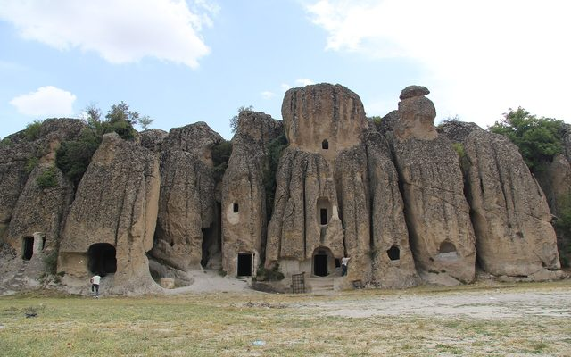
Kilistra Antik KentiKonya · Roma / BizansKitanaura Antik KentiAntalya · RomaKlaros Örenyeriİzmir · Arkaik / RomaKomana Pontika Antik KentiTokat · Helenistik / RomaKorydalla Antik KentiAntalya · Likya / Roma Korykos ve KızkalesiMersin · Roma / Ortaçağ
Korykos ve KızkalesiMersin · Roma / Ortaçağ Kremna Antik KentiBurdur · RomaKyaneai Antik KentiAntalya · Likya / RomaKyme Antik Kentiİzmir · Arkaik / RomaKyzikos Antik KentiBalıkesir · Helenistik / Roma
Kremna Antik KentiBurdur · RomaKyaneai Antik KentiAntalya · Likya / RomaKyme Antik Kentiİzmir · Arkaik / RomaKyzikos Antik KentiBalıkesir · Helenistik / Roma Köprüpazar (Aspendos) KöprüsüAntalya · Roma / SelçukluLagina ÖrenyeriMuğla · Helenistik / RomaLambousa (Lapithos) Antik KentiGirne · Roma / BizansLamos Antik KentiAntalya · Roma / BizansLaodikeia ÖrenyeriDenizli · Helenistik / Roma
Köprüpazar (Aspendos) KöprüsüAntalya · Roma / SelçukluLagina ÖrenyeriMuğla · Helenistik / RomaLambousa (Lapithos) Antik KentiGirne · Roma / BizansLamos Antik KentiAntalya · Roma / BizansLaodikeia ÖrenyeriDenizli · Helenistik / Roma Lebedos Antik Kentiİzmir · İyon / RomaLikya Uygarlıkları Müzesi ve Andrıake ÖrenyeriAntalya · Likya / RomaLimyra ÖrenyeriAntalya · Likya / RomaMagarsus Antik KentiAdana · Helenistik / RomaMagnesia ÖrenyeriAydın · Helenistik / RomaManisa Akhisar Müzesi ve Akhisar Tepe MezarlığıManisa · Helenistik / RomaMetropolis Örenyeriİzmir · Helenistik / Roma
Lebedos Antik Kentiİzmir · İyon / RomaLikya Uygarlıkları Müzesi ve Andrıake ÖrenyeriAntalya · Likya / RomaLimyra ÖrenyeriAntalya · Likya / RomaMagarsus Antik KentiAdana · Helenistik / RomaMagnesia ÖrenyeriAydın · Helenistik / RomaManisa Akhisar Müzesi ve Akhisar Tepe MezarlığıManisa · Helenistik / RomaMetropolis Örenyeriİzmir · Helenistik / Roma Mezgitkale Mezar AnıtıMersin · RomaMilas Euromos ÖrenyeriMuğla · Helenistik / RomaMilet ÖrenyeriAydın · Arkaik / Roma
Mezgitkale Mezar AnıtıMersin · RomaMilas Euromos ÖrenyeriMuğla · Helenistik / RomaMilet ÖrenyeriAydın · Arkaik / Roma Misis (Mopsuestia) Antik KentiAdana · Roma / BizansMyra ÖrenyeriAntalya · Likya / RomaNiğde Andaval ÖrenyeriNiğde · Roma / BizansNotion Antik Kentiİzmir · Helenistik / RomaNysa Sultanhisar ÖrenyeriAydın · Helenistik / RomaOinoanda Antik KentiMuğla · Likya / RomaOlba Antik KentiMersin · Helenistik / RomaOlympos ÖrenyeriAntalya · Likya / RomaParion Antik KentiÇanakkale · Helenistik / RomaPatara ÖrenyeriAntalya · Likya / RomaPednelissos Antik KentiAntalya · Helenistik / RomaPerge ÖrenyeriAntalya · Helenistik / RomaPerperene Antik KentiBalıkesir · Helenistik / RomaPerre ÖrenyeriAdıyaman · Kommagene / RomaPessinus ÖrenyeriEskişehir · Frig / Helenistik / RomaPhaselis ÖrenyeriAntalya · Likya / RomaPhokaia (Foça) Antik Kentiİzmir · Arkaik / RomaPisidia Antiokheia Antik KentiIsparta · Helenistik / RomaPompeiopolis Antik KentiKastamonu · Roma
Misis (Mopsuestia) Antik KentiAdana · Roma / BizansMyra ÖrenyeriAntalya · Likya / RomaNiğde Andaval ÖrenyeriNiğde · Roma / BizansNotion Antik Kentiİzmir · Helenistik / RomaNysa Sultanhisar ÖrenyeriAydın · Helenistik / RomaOinoanda Antik KentiMuğla · Likya / RomaOlba Antik KentiMersin · Helenistik / RomaOlympos ÖrenyeriAntalya · Likya / RomaParion Antik KentiÇanakkale · Helenistik / RomaPatara ÖrenyeriAntalya · Likya / RomaPednelissos Antik KentiAntalya · Helenistik / RomaPerge ÖrenyeriAntalya · Helenistik / RomaPerperene Antik KentiBalıkesir · Helenistik / RomaPerre ÖrenyeriAdıyaman · Kommagene / RomaPessinus ÖrenyeriEskişehir · Frig / Helenistik / RomaPhaselis ÖrenyeriAntalya · Likya / RomaPhokaia (Foça) Antik Kentiİzmir · Arkaik / RomaPisidia Antiokheia Antik KentiIsparta · Helenistik / RomaPompeiopolis Antik KentiKastamonu · Roma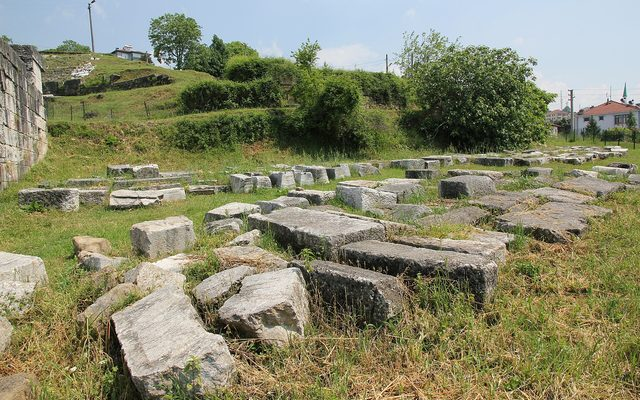
Prusias ad Hypium (Konuralp) Antik KentiDüzce · RomaRhodiapolis Antik KentiAntalya · Likya / Roma Roma Hamamı ÖrenyeriAnkara · RomaSagalassos ÖrenyeriBurdur · Helenistik / RomaSalamis ÖrenyeriGazimağusa · Tunç Çağı / Roma / BizansSardes ÖrenyeriManisa · Lidya / Roma
Roma Hamamı ÖrenyeriAnkara · RomaSagalassos ÖrenyeriBurdur · Helenistik / RomaSalamis ÖrenyeriGazimağusa · Tunç Çağı / Roma / BizansSardes ÖrenyeriManisa · Lidya / Roma Sarıkaya Roma HamamıYozgat · Roma
Sarıkaya Roma HamamıYozgat · Roma Satala Antik KentiGümüşhane · RomaSebastopolis Antik KentiTokat · RomaSedir Adası ÖrenyeriMuğla · Helenistik / RomaSeleukeia (Pamfilya) Antik KentiAntalya · Helenistik / RomaSelge Antik KentiAntalya · Helenistik / Roma
Satala Antik KentiGümüşhane · RomaSebastopolis Antik KentiTokat · RomaSedir Adası ÖrenyeriMuğla · Helenistik / RomaSeleukeia (Pamfilya) Antik KentiAntalya · Helenistik / RomaSelge Antik KentiAntalya · Helenistik / Roma Selinus Antik KentiAntalya · RomaSide ÖrenyeriAntalya · Helenistik / RomaSidyma Antik KentiMuğla · Likya / RomaSillyon Antik KentiAntalya · Helenistik / Roma
Selinus Antik KentiAntalya · RomaSide ÖrenyeriAntalya · Helenistik / RomaSidyma Antik KentiMuğla · Likya / RomaSillyon Antik KentiAntalya · Helenistik / Roma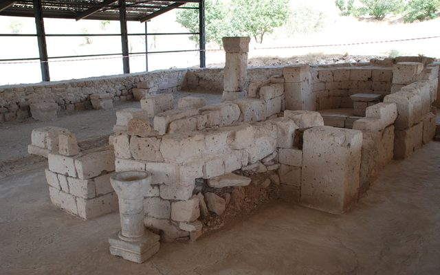
Sobesos Antik Kenti (Şahinefendi)Nevşehir · Roma / BizansSobessos ÖrenyeriNevşehir · Roma / BizansSofraz Anıt MezarıAdıyaman · Helenistik / RomaSoli Pompeiopolis Antik KentiMersin · Helenistik / RomaSoli ÖrenyeriLefke · Arkaik / RomaSoğmatar Antik KentiŞanlıurfa · Roma / SabiiStratonikeia ÖrenyeriMuğla · Helenistik – Osmanlı Sultanahmet Meydanı (Hipodrom)İstanbul · Roma / Bizans
Sultanahmet Meydanı (Hipodrom)İstanbul · Roma / Bizans Tapureli Antik KentiMersin · Roma / Bizans
Tapureli Antik KentiMersin · Roma / Bizans Tarsus Antik Roma YoluMersin · RomaTarsus GözlükuleMersin · Tunç Çağı – Roma
Tarsus Antik Roma YoluMersin · RomaTarsus GözlükuleMersin · Tunç Çağı – Roma Tarsus Kleopatra Kapısı ve Antik YolMersin · Roma
Tarsus Kleopatra Kapısı ve Antik YolMersin · Roma Tarsus St. Paul KuyusuMersin · Roma / Erken Hristiyanlık
Tarsus St. Paul KuyusuMersin · Roma / Erken Hristiyanlık TaşköprüAdana · RomaTermessos ÖrenyeriAntalya · Helenistik / RomaTilbaşar KalesiGaziantep · Roma / Ortaçağ
TaşköprüAdana · RomaTermessos ÖrenyeriAntalya · Helenistik / RomaTilbaşar KalesiGaziantep · Roma / Ortaçağ Titus Tüneli (Vespasianus Tüneli)Hatay · RomaTralleis Antik KentiAydın · Helenistik / Roma
Titus Tüneli (Vespasianus Tüneli)Hatay · RomaTralleis Antik KentiAydın · Helenistik / Roma Trebenna Antik KentiAntalya · Roma / Bizans
Trebenna Antik KentiAntalya · Roma / Bizans Tyana Antik Kenti ve Roma Havuzu (Kemerhisar)Niğde · RomaUzuncaburç ÖrenyeriMersin · Helenistik / RomaVan KalesiVan · Urartu – Osmanlı
Tyana Antik Kenti ve Roma Havuzu (Kemerhisar)Niğde · RomaUzuncaburç ÖrenyeriMersin · Helenistik / RomaVan KalesiVan · Urartu – Osmanlı Yanıkhan Ören YeriMersin · Roma / BizansYumuktepe HöyüğüMersin · Neolitik – Ortaçağ
Yanıkhan Ören YeriMersin · Roma / BizansYumuktepe HöyüğüMersin · Neolitik – Ortaçağ Zengibar Kalesi (Isaura)Konya · Roma
Zengibar Kalesi (Isaura)Konya · Roma Zerzevan KalesiDiyarbakır · RomaZeugma ÖrenyeriGaziantep · Helenistik / RomaÇatıören Antik YerleşimiMersin · Helenistik / Roma
Zerzevan KalesiDiyarbakır · RomaZeugma ÖrenyeriGaziantep · Helenistik / RomaÇatıören Antik YerleşimiMersin · Helenistik / Roma Çemberlitaş Sütunu (Konstantin Forumu)İstanbul · Roma / BizansÇevlik ÖrenyeriHatay · Helenistik / Roma
Çemberlitaş Sütunu (Konstantin Forumu)İstanbul · Roma / BizansÇevlik ÖrenyeriHatay · Helenistik / Roma Üçayaklı Villa RustikaMersin · Roma / Bizansİdyros Antik KentiAntalya · Roma / BizansŞanlıurfa KalesiŞanlıurfa · Helenistik – OrtaçağŞar (Komana) Antik KentiAdana · Hitit / RomaŞuayb ŞehriŞanlıurfa · Roma / İslamiBodrum Sualtı Arkeoloji MüzesiMuğla · Tunç Çağı – OsmanlıFethiye MüzesiMuğla · Likya / Roma
Üçayaklı Villa RustikaMersin · Roma / Bizansİdyros Antik KentiAntalya · Roma / BizansŞanlıurfa KalesiŞanlıurfa · Helenistik – OrtaçağŞar (Komana) Antik KentiAdana · Hitit / RomaŞuayb ŞehriŞanlıurfa · Roma / İslamiBodrum Sualtı Arkeoloji MüzesiMuğla · Tunç Çağı – OsmanlıFethiye MüzesiMuğla · Likya / Roma Haleplibahçe Mozaik MüzesiŞanlıurfa · Roma / Bizans
Haleplibahçe Mozaik MüzesiŞanlıurfa · Roma / Bizans Hatay Arkeoloji MüzesiHatay · Roma / Çok Dönemli
Hatay Arkeoloji MüzesiHatay · Roma / Çok Dönemli Hierapolis (Pamukkale) Arkeoloji MüzesiDenizli · RomaKocaeli Arkeoloji MüzesiKocaeli · Roma / Çok Dönemli
Hierapolis (Pamukkale) Arkeoloji MüzesiDenizli · RomaKocaeli Arkeoloji MüzesiKocaeli · Roma / Çok Dönemli Konuralp MüzesiDüzce · Roma
Konuralp MüzesiDüzce · Roma Misis Mozaik MüzesiAdana · Roma
Misis Mozaik MüzesiAdana · Roma Side MüzesiAntalya · Roma
Side MüzesiAntalya · Roma Silifke Narlıkuyu Mozaik MüzesiMersin · Roma
Silifke Narlıkuyu Mozaik MüzesiMersin · Roma Yalvaç MüzesiIsparta · Roma / Çok Dönemli
Yalvaç MüzesiIsparta · Roma / Çok Dönemli Zeugma Mozaik MüzesiGaziantep · RomaŞanlıurfa Arkeoloji MüzesiŞanlıurfa · Neolitik – Osmanlı
Zeugma Mozaik MüzesiGaziantep · RomaŞanlıurfa Arkeoloji MüzesiŞanlıurfa · Neolitik – OsmanlıBizans ve Orta Çağ
330 – 1453 · 160 yer
 Ani ÖrenyeriKars · OrtaçağBergama Kızılavluİzmir · Roma / Bizans
Ani ÖrenyeriKars · OrtaçağBergama Kızılavluİzmir · Roma / Bizans Derinkuyu Yeraltı ŞehriNevşehir · Bizans
Derinkuyu Yeraltı ŞehriNevşehir · Bizans El Nazar KilisesiNevşehir · Bizans (10. yy)
El Nazar KilisesiNevşehir · Bizans (10. yy) Göreme ÖrenyeriNevşehir · Bizans (9.–12. yy)
Göreme ÖrenyeriNevşehir · Bizans (9.–12. yy) Karanlık Kilise (Göreme)Nevşehir · Bizans (11. yy)
Karanlık Kilise (Göreme)Nevşehir · Bizans (11. yy) Kaymaklı Yeraltı ŞehriNevşehir · Bizans
Kaymaklı Yeraltı ŞehriNevşehir · Bizans Zelve - Paşabağlar ÖrenyeriNevşehir · Bizans / Osmanlı
Zelve - Paşabağlar ÖrenyeriNevşehir · Bizans / Osmanlı Çavuşin Örenyeri (Çavuşin Kilisesi)Nevşehir · BizansAfyonkarahisar KalesiAfyonkarahisar · Hitit – OsmanlıAkkale Ören YeriMersin · Roma / BizansAksaray Manastır Vadisi ÖrenyeriAksaray · Bizans
Çavuşin Örenyeri (Çavuşin Kilisesi)Nevşehir · BizansAfyonkarahisar KalesiAfyonkarahisar · Hitit – OsmanlıAkkale Ören YeriMersin · Roma / BizansAksaray Manastır Vadisi ÖrenyeriAksaray · Bizans Akçakoca (Ceneviz) KalesiDüzce · Ceneviz
Akçakoca (Ceneviz) KalesiDüzce · Ceneviz Alahan ManastırıMersin · BizansAlaşehir ÖrenyeriManisa · Helenistik / Bizans
Alahan ManastırıMersin · BizansAlaşehir ÖrenyeriManisa · Helenistik / Bizans Amasra KalesiBartın · Bizans / CenevizAmorium Antik KentiAfyonkarahisar · Roma / BizansAnavarza ÖrenyeriAdana · Roma / BizansAnemurium ÖrenyeriMersin · Roma / BizansAnkara KalesiAnkara · Roma – Osmanlı
Amasra KalesiBartın · Bizans / CenevizAmorium Antik KentiAfyonkarahisar · Roma / BizansAnavarza ÖrenyeriAdana · Roma / BizansAnemurium ÖrenyeriMersin · Roma / BizansAnkara KalesiAnkara · Roma – Osmanlı Antiphonitis KilisesiGirne · Bizans (12. yy)
Antiphonitis KilisesiGirne · Bizans (12. yy) Apostolos Andreas Manastırıİskele · Bizans / Osmanlı
Apostolos Andreas Manastırıİskele · Bizans / Osmanlı Aya İrini Anıt Müzesiİstanbul · Bizans (6. yy)
Aya İrini Anıt Müzesiİstanbul · Bizans (6. yy) Ayas (Yumurtalık) KalesiAdana · Ortaçağ
Ayas (Yumurtalık) KalesiAdana · Ortaçağ Ayasofya-i Kebir Cami-i Şerifiİstanbul · Bizans / Osmanlı
Ayasofya-i Kebir Cami-i Şerifiİstanbul · Bizans / Osmanlı Ayasuluk - St.Jean Örenyeriİzmir · Bizans
Ayasuluk - St.Jean Örenyeriİzmir · Bizans Ayasuluk Kalesiİzmir · Bizans / BeyliklerAyia Trias Bazilikasıİskele · Erken HristiyanlıkAziz Mercurius Yeraltı ŞehriAksaray · Bizans
Ayasuluk Kalesiİzmir · Bizans / BeyliklerAyia Trias Bazilikasıİskele · Erken HristiyanlıkAziz Mercurius Yeraltı ŞehriAksaray · Bizans Bakras KalesiHatay · Ortaçağ
Bakras KalesiHatay · Ortaçağ Balıklıgöl ve Halil-ür Rahman CamiiŞanlıurfa · Ortaçağ / Osmanlı
Balıklıgöl ve Halil-ür Rahman CamiiŞanlıurfa · Ortaçağ / Osmanlı Bellapais ManastırıGirne · Lüzinyan
Bellapais ManastırıGirne · Lüzinyan Binbir KiliseKaraman · Bizans
Binbir KiliseKaraman · Bizans Binbirdirek Sarnıcıİstanbul · Bizans
Binbirdirek Sarnıcıİstanbul · Bizans Bitlis KalesiBitlis · Ortaçağ / Osmanlı
Bitlis KalesiBitlis · Ortaçağ / Osmanlı Bolaman Kalesi ve Hazinedaroğlu KonağıOrdu · Ortaçağ / Osmanlı
Bolaman Kalesi ve Hazinedaroğlu KonağıOrdu · Ortaçağ / Osmanlı Buffavento KalesiGirne · Bizans / LüzinyanBursa İznik Göl BazilikasıBursa · Bizans
Buffavento KalesiGirne · Bizans / LüzinyanBursa İznik Göl BazilikasıBursa · Bizans Dara ÖrenyeriMardin · BizansDerbe HöyüğüKaraman · Roma / Bizans
Dara ÖrenyeriMardin · BizansDerbe HöyüğüKaraman · Roma / Bizans Deyrulzafaran ManastırıMardin · Erken Hristiyanlık / BizansDiyarbakır SurlarıDiyarbakır · Roma – OsmanlıEdirne Makedonya KulesiEdirne · Roma / Bizans / OsmanlıEfes Örenyeri-Yamaçevlerİzmir · Roma / BizansEnez Kalesi (Ainos)Edirne · Antik / Bizans / Osmanlı
Deyrulzafaran ManastırıMardin · Erken Hristiyanlık / BizansDiyarbakır SurlarıDiyarbakır · Roma – OsmanlıEdirne Makedonya KulesiEdirne · Roma / Bizans / OsmanlıEfes Örenyeri-Yamaçevlerİzmir · Roma / BizansEnez Kalesi (Ainos)Edirne · Antik / Bizans / Osmanlı Erzurum KalesiErzurum · Bizans / Selçuklu / OsmanlıEtenna Antik KentiAntalya · Roma / BizansEğil Kalesi ve Peygamber TürbeleriDiyarbakır · Asur – Osmanlı
Erzurum KalesiErzurum · Bizans / Selçuklu / OsmanlıEtenna Antik KentiAntalya · Roma / BizansEğil Kalesi ve Peygamber TürbeleriDiyarbakır · Asur – Osmanlı Fethiye Gemile AdasıMuğla · BizansFethiye Tlos ÖrenyeriMuğla · Tunç Çağı – OsmanlıFildamı Sarnıcıİstanbul · BizansFilyos(Tios) ÖrenyeriZonguldak · Helenistik – BizansGagae Antik KentiAntalya · Likya / Bizans
Fethiye Gemile AdasıMuğla · BizansFethiye Tlos ÖrenyeriMuğla · Tunç Çağı – OsmanlıFildamı Sarnıcıİstanbul · BizansFilyos(Tios) ÖrenyeriZonguldak · Helenistik – BizansGagae Antik KentiAntalya · Likya / Bizans Gaziantep KalesiGaziantep · Bizans / Memlük / Osmanlı
Gaziantep KalesiGaziantep · Bizans / Memlük / Osmanlı Giresun KalesiGiresun · Pontus / Bizans
Giresun KalesiGiresun · Pontus / Bizans Girne Kalesi ve Batık Gemi MüzesiGirne · Bizans / VenedikGökkale Ören YeriMersin · Roma / Bizans
Girne Kalesi ve Batık Gemi MüzesiGirne · Bizans / VenedikGökkale Ören YeriMersin · Roma / Bizans Gözne KalesiMersin · Ortaçağ
Gözne KalesiMersin · Ortaçağ Gülşehir-St.Jean KilisesiNevşehir · Bizans (13. yy)
Gülşehir-St.Jean KilisesiNevşehir · Bizans (13. yy) Gümüşler Manastırı ve Yeraltı ŞehriNiğde · Bizans
Gümüşler Manastırı ve Yeraltı ŞehriNiğde · Bizans Güzelyurt Manastır VadisiAksaray · Bizans
Güzelyurt Manastır VadisiAksaray · Bizans Gıduts ManastırıVan · OrtaçağHadrianopolis ÖrenyeriKarabük · Roma / BizansHarput KalesiElâzığ · Urartu / OrtaçağHarran ÖrenyeriŞanlıurfa · Tunç Çağı – OrtaçağHerakleia (Latmos) Antik KentiMuğla · Helenistik / BizansIassos ÖrenyeriMuğla · Tunç Çağı – Bizans
Gıduts ManastırıVan · OrtaçağHadrianopolis ÖrenyeriKarabük · Roma / BizansHarput KalesiElâzığ · Urartu / OrtaçağHarran ÖrenyeriŞanlıurfa · Tunç Çağı – OrtaçağHerakleia (Latmos) Antik KentiMuğla · Helenistik / BizansIassos ÖrenyeriMuğla · Tunç Çağı – Bizans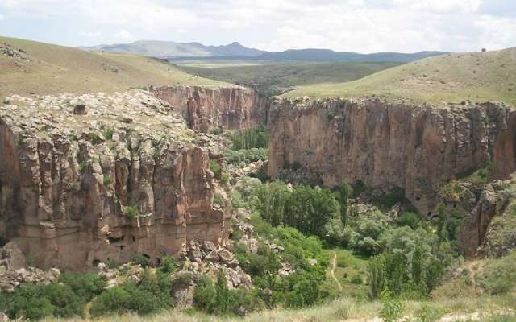
Ihlara Vadisi ÖrenyeriAksaray · BizansJuliopolis NekropolüAnkara · Roma / Bizans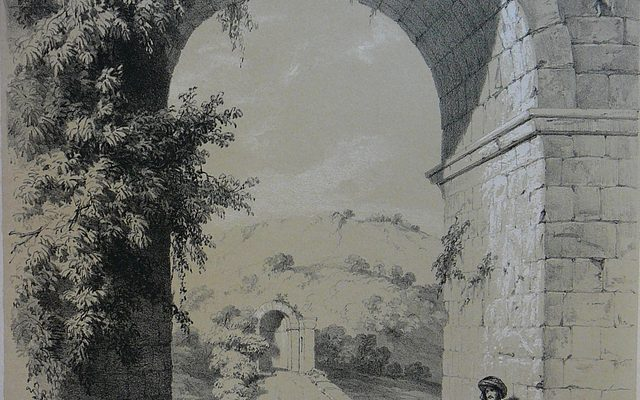
Justinianus (Beşköprü) KöprüsüSakarya · BizansKadıkalesi ÖrenyeriAydın · Bizans / OrtaçağKahta Yenikale ÖrenyeriAdıyaman · Kommagene / OrtaçağKanlı Divane ÖrenyeriMersin · Helenistik / Roma / BizansKanlıdivane (Kanytelis)Mersin · Helenistik / Bizans Kantara Kalesiİskele · Bizans / LüzinyanKarakabaklı Antik YerleşimiMersin · Roma / Bizans
Kantara Kalesiİskele · Bizans / LüzinyanKarakabaklı Antik YerleşimiMersin · Roma / Bizans Kariye Camii (Khora)İstanbul · Bizans / OsmanlıKastabala ÖrenyeriOsmaniye · Helenistik / Roma / Ortaçağ
Kariye Camii (Khora)İstanbul · Bizans / OsmanlıKastabala ÖrenyeriOsmaniye · Helenistik / Roma / Ortaçağ Kasımiye MedresesiMardin · Artuklu / Akkoyunlu
Kasımiye MedresesiMardin · Artuklu / Akkoyunlu Keskin Sulu Mağara Yeraltı ŞehriKırıkkale · Bizans / OrtaçağKilistra Antik KentiKonya · Roma / BizansKorykos ve KızkalesiMersin · Roma / Ortaçağ
Keskin Sulu Mağara Yeraltı ŞehriKırıkkale · Bizans / OrtaçağKilistra Antik KentiKonya · Roma / BizansKorykos ve KızkalesiMersin · Roma / Ortaçağ Kütahya KalesiKütahya · Bizans / GermiyanKüçük Ayvasıl St. Anna KilisesiTrabzon · Bizans (9. yy)
Kütahya KalesiKütahya · Bizans / GermiyanKüçük Ayvasıl St. Anna KilisesiTrabzon · Bizans (9. yy) Kız Kulesiİstanbul · Bizans / Osmanlı
Kız Kulesiİstanbul · Bizans / Osmanlı Lala Mustafa Paşa CamiiGazimağusa · Lüzinyan / OsmanlıLambousa (Lapithos) Antik KentiGirne · Roma / BizansLamos Antik KentiAntalya · Roma / Bizans
Lala Mustafa Paşa CamiiGazimağusa · Lüzinyan / OsmanlıLambousa (Lapithos) Antik KentiGirne · Roma / BizansLamos Antik KentiAntalya · Roma / Bizans Malabadi KöprüsüDiyarbakır · Artuklu
Malabadi KöprüsüDiyarbakır · Artuklu Mamure KalesiMersin · Ortaçağ / OsmanlıMazı Yeraltı ŞehriNevşehir · Bizans
Mamure KalesiMersin · Ortaçağ / OsmanlıMazı Yeraltı ŞehriNevşehir · Bizans Mersin Kız KalesiMersin · Bizans / Ortaçağ
Mersin Kız KalesiMersin · Bizans / Ortaçağ Meryem Ana Eviİzmir · Bizans
Meryem Ana Eviİzmir · Bizans Meryem Ana ManastırıGiresun · BizansMisis (Mopsuestia) Antik KentiAdana · Roma / Bizans
Meryem Ana ManastırıGiresun · BizansMisis (Mopsuestia) Antik KentiAdana · Roma / Bizans Mor Gabriel ManastırıMardin · Erken HristiyanlıkMucur Yeraltı ŞehriKırşehir · Bizans / Ortaçağ
Mor Gabriel ManastırıMardin · Erken HristiyanlıkMucur Yeraltı ŞehriKırşehir · Bizans / Ortaçağ Namrun KalesiMersin · Bizans / ErmeniNiğde Andaval ÖrenyeriNiğde · Roma / Bizans
Namrun KalesiMersin · Bizans / ErmeniNiğde Andaval ÖrenyeriNiğde · Roma / Bizans Nymphaion (Nif) Laskaris Sarayıİzmir · Bizans
Nymphaion (Nif) Laskaris Sarayıİzmir · Bizans Othello KalesiGazimağusa · Lüzinyan / Venedik
Othello KalesiGazimağusa · Lüzinyan / Venedik Rumkale ÖrenyeriGaziantep · OrtaçağSalamis ÖrenyeriGazimağusa · Tunç Çağı / Roma / Bizans
Rumkale ÖrenyeriGaziantep · OrtaçağSalamis ÖrenyeriGazimağusa · Tunç Çağı / Roma / Bizans Saratlı Kırkgöz Yeraltı ŞehriAksaray · Bizans
Saratlı Kırkgöz Yeraltı ŞehriAksaray · Bizans Selimiye CamiiLefkoşa · Lüzinyan / Osmanlı
Selimiye CamiiLefkoşa · Lüzinyan / Osmanlı Silifke Ayatekla ÖrenyeriMersin · Erken Hristiyanlık / Bizans
Silifke Ayatekla ÖrenyeriMersin · Erken Hristiyanlık / Bizans Silifke Cennet Cehennem ObruklarıMersin · Doğal Alan / Bizans
Silifke Cennet Cehennem ObruklarıMersin · Doğal Alan / Bizans Silifke KalesiMersin · Bizans / Ortaçağ
Silifke KalesiMersin · Bizans / Ortaçağ Sille ve Aya Elenia KilisesiKonya · Bizans / OsmanlıSimena ÖrenyeriAntalya · Likya / BizansSobesos Antik Kenti (Şahinefendi)Nevşehir · Roma / BizansSobessos ÖrenyeriNevşehir · Roma / Bizans
Sille ve Aya Elenia KilisesiKonya · Bizans / OsmanlıSimena ÖrenyeriAntalya · Likya / BizansSobesos Antik Kenti (Şahinefendi)Nevşehir · Roma / BizansSobessos ÖrenyeriNevşehir · Roma / Bizans Softa KalesiMersin · Bizans / Ermeni
Softa KalesiMersin · Bizans / Ermeni St. Barnabas ManastırıGazimağusa · Erken Hristiyanlık / Osmanlı
St. Barnabas ManastırıGazimağusa · Erken Hristiyanlık / Osmanlı St. Hilarion KalesiGirne · Bizans / Lüzinyan
St. Hilarion KalesiGirne · Bizans / Lüzinyan St. Simon ManastırıHatay · BizansStratonikeia ÖrenyeriMuğla · Helenistik – OsmanlıSultanahmet Meydanı (Hipodrom)İstanbul · Roma / Bizans
St. Simon ManastırıHatay · BizansStratonikeia ÖrenyeriMuğla · Helenistik – OsmanlıSultanahmet Meydanı (Hipodrom)İstanbul · Roma / Bizans Sümela ManastırıTrabzon · Bizans – 20. yyTapureli Antik KentiMersin · Roma / BizansTarsus St. Paul KuyusuMersin · Roma / Erken Hristiyanlık
Sümela ManastırıTrabzon · Bizans – 20. yyTapureli Antik KentiMersin · Roma / BizansTarsus St. Paul KuyusuMersin · Roma / Erken Hristiyanlık Tatlarin Yeraltı ŞehriNevşehir · Bizans
Tatlarin Yeraltı ŞehriNevşehir · Bizans Theodosius Forumu Kalıntılarıİstanbul · Bizans
Theodosius Forumu Kalıntılarıİstanbul · Bizans Theodosius Surlarıİstanbul · BizansTilbaşar KalesiGaziantep · Roma / Ortaçağ
Theodosius Surlarıİstanbul · BizansTilbaşar KalesiGaziantep · Roma / Ortaçağ Trabzon Ayasofya CamiiTrabzon · BizansTrebenna Antik KentiAntalya · Roma / BizansVan KalesiVan · Urartu – OsmanlıVize Ayasofya (Gazi Süleyman Paşa) CamiiKırklareli · BizansYanıkhan Ören YeriMersin · Roma / Bizans
Trabzon Ayasofya CamiiTrabzon · BizansTrebenna Antik KentiAntalya · Roma / BizansVan KalesiVan · Urartu – OsmanlıVize Ayasofya (Gazi Süleyman Paşa) CamiiKırklareli · BizansYanıkhan Ören YeriMersin · Roma / Bizans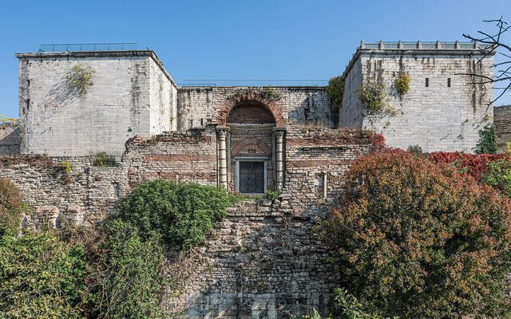
Yedikule Hisarıİstanbul · Bizans / Osmanlı Yerebatan Sarnıcıİstanbul · Bizans (6. yy)
Yerebatan Sarnıcıİstanbul · Bizans (6. yy) Yeşilhisar Soğanlı ÖrenyeriKayseri · BizansYumuktepe HöyüğüMersin · Neolitik – OrtaçağYılankaleAdana · Kilikya Ermeni Krallığı
Yeşilhisar Soğanlı ÖrenyeriKayseri · BizansYumuktepe HöyüğüMersin · Neolitik – OrtaçağYılankaleAdana · Kilikya Ermeni Krallığı ZilkaleRize · Ortaçağ
ZilkaleRize · Ortaçağ Zinciriye MedresesiDiyarbakır · ArtukluÇemberlitaş Sütunu (Konstantin Forumu)İstanbul · Roma / Bizans
Zinciriye MedresesiDiyarbakır · ArtukluÇemberlitaş Sütunu (Konstantin Forumu)İstanbul · Roma / Bizans Öküzlü Ören YeriMersin · Bizans
Öküzlü Ören YeriMersin · Bizans Özkonak Yeraltı ŞehriNevşehir · BizansÜçayaklı Villa RustikaMersin · Roma / Bizansİdyros Antik KentiAntalya · Roma / Bizans
Özkonak Yeraltı ŞehriNevşehir · BizansÜçayaklı Villa RustikaMersin · Roma / Bizansİdyros Antik KentiAntalya · Roma / Bizans İmrahor İlyas Bey Camii (Studios Manastırı)İstanbul · Bizans
İmrahor İlyas Bey Camii (Studios Manastırı)İstanbul · Bizans İstanbul Galata Kulesiİstanbul · Ceneviz / OsmanlıŞanlıurfa KalesiŞanlıurfa · Helenistik – Ortaçağ
İstanbul Galata Kulesiİstanbul · Ceneviz / OsmanlıŞanlıurfa KalesiŞanlıurfa · Helenistik – Ortaçağ Şerefiye Sarnıcıİstanbul · BizansAkdamar Anıt MüzesiVan · Ortaçağ (10. yy)
Şerefiye Sarnıcıİstanbul · BizansAkdamar Anıt MüzesiVan · Ortaçağ (10. yy) Ayasofya Tarih ve Deneyim Müzesiİstanbul · Bizans / Osmanlı
Ayasofya Tarih ve Deneyim Müzesiİstanbul · Bizans / Osmanlı Aziz (St.) Nikolaos Anıt MüzesiAntalya · BizansBodrum Serçe Limanı Cam Batığı Sergi SalonuMuğla · Ortaçağ (11. yy)Bodrum Sualtı Arkeoloji MüzesiMuğla · Tunç Çağı – Osmanlı
Aziz (St.) Nikolaos Anıt MüzesiAntalya · BizansBodrum Serçe Limanı Cam Batığı Sergi SalonuMuğla · Ortaçağ (11. yy)Bodrum Sualtı Arkeoloji MüzesiMuğla · Tunç Çağı – Osmanlı Büyük Saray Mozaikleri Müzesiİstanbul · Bizans
Büyük Saray Mozaikleri Müzesiİstanbul · Bizans Fethiye Müzesiİstanbul · BizansHaleplibahçe Mozaik MüzesiŞanlıurfa · Roma / Bizans
Fethiye Müzesiİstanbul · BizansHaleplibahçe Mozaik MüzesiŞanlıurfa · Roma / Bizans Lapidari MüzesiLefkoşa · Lüzinyan / Venedik
Lapidari MüzesiLefkoşa · Lüzinyan / Venedik Namık Kemal Zindanı ve MüzesiGazimağusa · Venedik / Osmanlı
Namık Kemal Zindanı ve MüzesiGazimağusa · Venedik / Osmanlı St. Pierre Anıt MüzesiHatay · Erken Hristiyanlık
St. Pierre Anıt MüzesiHatay · Erken Hristiyanlık Tarsus St. Paul Anıt MüzesiMersin · Osmanlı / Hristiyanlık
Tarsus St. Paul Anıt MüzesiMersin · Osmanlı / Hristiyanlık İskele İkon Müzesiİskele · Bizans (12. yy)Şanlıurfa Arkeoloji MüzesiŞanlıurfa · Neolitik – Osmanlı
İskele İkon Müzesiİskele · Bizans (12. yy)Şanlıurfa Arkeoloji MüzesiŞanlıurfa · Neolitik – OsmanlıSelçuklu ve Beylikler
1071 – 1400 · 48 yer
 Afyon Mevlevihanesi (Sultan Divani)Afyonkarahisar · Selçuklu / OsmanlıAfyonkarahisar KalesiAfyonkarahisar · Hitit – Osmanlı
Afyon Mevlevihanesi (Sultan Divani)Afyonkarahisar · Selçuklu / OsmanlıAfyonkarahisar KalesiAfyonkarahisar · Hitit – Osmanlı Ahlat Selçuklu MezarlığıBitlis · Selçuklu / Beylikler
Ahlat Selçuklu MezarlığıBitlis · Selçuklu / Beylikler Alaeddin CamiiKonya · Selçuklu
Alaeddin CamiiKonya · Selçuklu Alanya KalesiAntalya · Selçuklu
Alanya KalesiAntalya · Selçuklu AlarahanAntalya · Selçuklu
AlarahanAntalya · Selçuklu Alay HanAksaray · SelçukluAnkara KalesiAnkara · Roma – Osmanlı
Alay HanAksaray · SelçukluAnkara KalesiAnkara · Roma – Osmanlı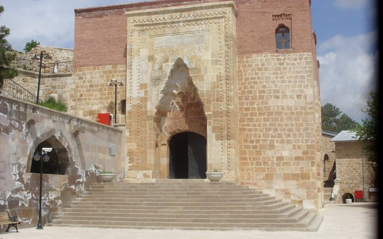
Ashab-ı Kehf KülliyesiKahramanmaraş · Selçuklu / OsmanlıAyasuluk Kalesiİzmir · Bizans / Beylikler Ağzıkara HanAksaray · Selçuklu
Ağzıkara HanAksaray · Selçuklu Cacabey MedresesiKırşehir · Selçuklu
Cacabey MedresesiKırşehir · Selçuklu Divriği Ulu Camii ve DarüşşifasıSivas · Selçuklu (13. yy)Diyarbakır SurlarıDiyarbakır · Roma – Osmanlı
Divriği Ulu Camii ve DarüşşifasıSivas · Selçuklu (13. yy)Diyarbakır SurlarıDiyarbakır · Roma – Osmanlı Diyarbakır Ulu CamiiDiyarbakır · SelçukluErzurum KalesiErzurum · Bizans / Selçuklu / OsmanlıEğil Kalesi ve Peygamber TürbeleriDiyarbakır · Asur – OsmanlıFethiye Tlos ÖrenyeriMuğla · Tunç Çağı – OsmanlıGaziantep KalesiGaziantep · Bizans / Memlük / Osmanlı
Diyarbakır Ulu CamiiDiyarbakır · SelçukluErzurum KalesiErzurum · Bizans / Selçuklu / OsmanlıEğil Kalesi ve Peygamber TürbeleriDiyarbakır · Asur – OsmanlıFethiye Tlos ÖrenyeriMuğla · Tunç Çağı – OsmanlıGaziantep KalesiGaziantep · Bizans / Memlük / Osmanlı Han el Ba'rur KervansarayıŞanlıurfa · Selçuklu
Han el Ba'rur KervansarayıŞanlıurfa · Selçuklu Kars KalesiKars · Selçuklu / OsmanlıKayseri KalesiKayseri · Roma / Selçuklu
Kars KalesiKars · Selçuklu / OsmanlıKayseri KalesiKayseri · Roma / Selçuklu Kubadabad SarayıKonya · SelçukluKöprüpazar (Aspendos) KöprüsüAntalya · Roma / Selçuklu
Kubadabad SarayıKonya · SelçukluKöprüpazar (Aspendos) KöprüsüAntalya · Roma / Selçuklu KızılkuleAntalya · Selçuklu
KızılkuleAntalya · Selçuklu Mahmut Bey CamiiKastamonu · Beylikler
Mahmut Bey CamiiKastamonu · Beylikler Milas Beçin Kalesi ve ÖrenyeriMuğla · Antik / Menteşe BeyliğiNakoleia ve Seyitgazi KülliyesiEskişehir · Selçuklu / Osmanlı
Milas Beçin Kalesi ve ÖrenyeriMuğla · Antik / Menteşe BeyliğiNakoleia ve Seyitgazi KülliyesiEskişehir · Selçuklu / Osmanlı Sahabiye MedresesiKayseri · Selçuklu
Sahabiye MedresesiKayseri · Selçuklu Sarıhan KervansarayıNevşehir · SelçukluStratonikeia ÖrenyeriMuğla · Helenistik – Osmanlı
Sarıhan KervansarayıNevşehir · SelçukluStratonikeia ÖrenyeriMuğla · Helenistik – Osmanlı Sultanhanı KervansarayıAksaray · SelçukluSümela ManastırıTrabzon · Bizans – 20. yyVan KalesiVan · Urartu – Osmanlı
Sultanhanı KervansarayıAksaray · SelçukluSümela ManastırıTrabzon · Bizans – 20. yyVan KalesiVan · Urartu – Osmanlı Yivli Minare CamiiAntalya · Selçuklu
Yivli Minare CamiiAntalya · Selçuklu Zazadin HanıKonya · Selçuklu
Zazadin HanıKonya · Selçuklu Üç KümbetlerErzurum · Saltuklu
Üç KümbetlerErzurum · Saltuklu Şarapsa HanıAntalya · SelçukluBodrum Sualtı Arkeoloji MüzesiMuğla · Tunç Çağı – Osmanlı
Şarapsa HanıAntalya · SelçukluBodrum Sualtı Arkeoloji MüzesiMuğla · Tunç Çağı – Osmanlı Etnografya MüzesiAnkara · Selçuklu / Osmanlı / Cumhuriyet
Etnografya MüzesiAnkara · Selçuklu / Osmanlı / Cumhuriyet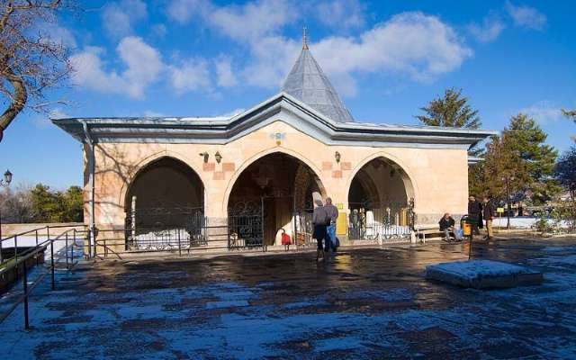
Hacıbektaş MüzesiNevşehir · Selçuklu / Osmanlı Karatay (Çini Eserler) MüzesiKonya · Selçuklu
Karatay (Çini Eserler) MüzesiKonya · Selçuklu Konya Panorama MüzesiKonya · SelçukluMalazgirt MüzesiMuş · Selçuklu (1071)
Konya Panorama MüzesiKonya · SelçukluMalazgirt MüzesiMuş · Selçuklu (1071) Mevlana MüzesiKonya · Selçuklu / OsmanlıMevlevihane MüzesiAntalya · Selçuklu / Osmanlı
Mevlana MüzesiKonya · Selçuklu / OsmanlıMevlevihane MüzesiAntalya · Selçuklu / Osmanlı Türk ve İslam Eserleri Müzesiİstanbul · Selçuklu / OsmanlıŞanlıurfa Arkeoloji MüzesiŞanlıurfa · Neolitik – Osmanlı
Türk ve İslam Eserleri Müzesiİstanbul · Selçuklu / OsmanlıŞanlıurfa Arkeoloji MüzesiŞanlıurfa · Neolitik – OsmanlıOsmanlı Dönemi
1299 – 1922 · 171 yer
Zelve - Paşabağlar ÖrenyeriNevşehir · Bizans / OsmanlıAfyon Mevlevihanesi (Sultan Divani)Afyonkarahisar · Selçuklu / OsmanlıAfyonkarahisar KalesiAfyonkarahisar · Hitit – Osmanlı Ahrida Sinagoguİstanbul · Osmanlı (15. yy)Akşemsettin TürbesiBolu · Osmanlı
Ahrida Sinagoguİstanbul · Osmanlı (15. yy)Akşemsettin TürbesiBolu · Osmanlı Anadolu Hisarıİstanbul · OsmanlıAnkara KalesiAnkara · Roma – OsmanlıApostolos Andreas Manastırıİskele · Bizans / OsmanlıAshab-ı Kehf KülliyesiKahramanmaraş · Selçuklu / OsmanlıAyasofya-i Kebir Cami-i Şerifiİstanbul · Bizans / Osmanlı
Anadolu Hisarıİstanbul · OsmanlıAnkara KalesiAnkara · Roma – OsmanlıApostolos Andreas Manastırıİskele · Bizans / OsmanlıAshab-ı Kehf KülliyesiKahramanmaraş · Selçuklu / OsmanlıAyasofya-i Kebir Cami-i Şerifiİstanbul · Bizans / Osmanlı Aynalıkavak Kasrıİstanbul · Osmanlı (18. yy)Balıklıgöl ve Halil-ür Rahman CamiiŞanlıurfa · Ortaçağ / Osmanlı
Aynalıkavak Kasrıİstanbul · Osmanlı (18. yy)Balıklıgöl ve Halil-ür Rahman CamiiŞanlıurfa · Ortaçağ / Osmanlı Beylerbeyi Sarayıİstanbul · Osmanlı (19. yy)Bitlis KalesiBitlis · Ortaçağ / OsmanlıBolaman Kalesi ve Hazinedaroğlu KonağıOrdu · Ortaçağ / Osmanlı
Beylerbeyi Sarayıİstanbul · Osmanlı (19. yy)Bitlis KalesiBitlis · Ortaçağ / OsmanlıBolaman Kalesi ve Hazinedaroğlu KonağıOrdu · Ortaçağ / Osmanlı Bulgar Sveti Stefan (Demir) Kilisesiİstanbul · Osmanlı (19. yy)
Bulgar Sveti Stefan (Demir) Kilisesiİstanbul · Osmanlı (19. yy) Bursa Ulu CamiiBursa · Osmanlı (14. yy)
Bursa Ulu CamiiBursa · Osmanlı (14. yy) Bursa Yeşil Cami ve Yeşil TürbeBursa · Osmanlı (15. yy)
Bursa Yeşil Cami ve Yeşil TürbeBursa · Osmanlı (15. yy)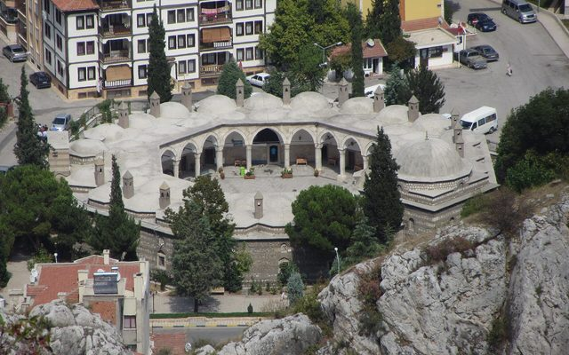
Büyük Ağa MedresesiAmasya · Osmanlı Büyük HanLefkoşa · Osmanlı (16. yy)
Büyük HanLefkoşa · Osmanlı (16. yy) Cinci HanıKarabük · Osmanlı
Cinci HanıKarabük · Osmanlı Cumalıkızık KöyüBursa · OsmanlıDemirköy DökümhanesiKırklareli · OsmanlıDiyarbakır SurlarıDiyarbakır · Roma – Osmanlı
Cumalıkızık KöyüBursa · OsmanlıDemirköy DökümhanesiKırklareli · OsmanlıDiyarbakır SurlarıDiyarbakır · Roma – Osmanlı Dolmabahçe Sarayıİstanbul · Osmanlı (19. yy)
Dolmabahçe Sarayıİstanbul · Osmanlı (19. yy) Edirne Büyük SinagogEdirne · Osmanlı (20. yy)Edirne Makedonya KulesiEdirne · Roma / Bizans / Osmanlı
Edirne Büyük SinagogEdirne · Osmanlı (20. yy)Edirne Makedonya KulesiEdirne · Roma / Bizans / Osmanlı Edirne Sarayı (Saray-ı Cedid) KalıntılarıEdirne · Osmanlı
Edirne Sarayı (Saray-ı Cedid) KalıntılarıEdirne · Osmanlı Edirne Selimiye CamiiEdirne · Osmanlı (16. yy)
Edirne Selimiye CamiiEdirne · Osmanlı (16. yy) Emir Sultan CamiiBursa · OsmanlıEnez Kalesi (Ainos)Edirne · Antik / Bizans / OsmanlıErzurum KalesiErzurum · Bizans / Selçuklu / Osmanlı
Emir Sultan CamiiBursa · OsmanlıEnez Kalesi (Ainos)Edirne · Antik / Bizans / OsmanlıErzurum KalesiErzurum · Bizans / Selçuklu / Osmanlı Eyüp Sultan Camiiİstanbul · OsmanlıEğil Kalesi ve Peygamber TürbeleriDiyarbakır · Asur – OsmanlıFener Rum Patrikhanesi ve Aya Yorgi Kilisesiİstanbul · Osmanlı (18. yy)
Eyüp Sultan Camiiİstanbul · OsmanlıEğil Kalesi ve Peygamber TürbeleriDiyarbakır · Asur – OsmanlıFener Rum Patrikhanesi ve Aya Yorgi Kilisesiİstanbul · Osmanlı (18. yy) Fethiye Kayaköy ÖrenyeriMuğla · 19.–20. yyFethiye Tlos ÖrenyeriMuğla · Tunç Çağı – OsmanlıGaziantep KalesiGaziantep · Bizans / Memlük / Osmanlı
Fethiye Kayaköy ÖrenyeriMuğla · 19.–20. yyFethiye Tlos ÖrenyeriMuğla · Tunç Çağı – OsmanlıGaziantep KalesiGaziantep · Bizans / Memlük / Osmanlı Gelibolu Tarihi Alanı (Çanakkale Savaşları)Çanakkale · Osmanlı / Birinci Dünya Savaşı
Gelibolu Tarihi Alanı (Çanakkale Savaşları)Çanakkale · Osmanlı / Birinci Dünya Savaşı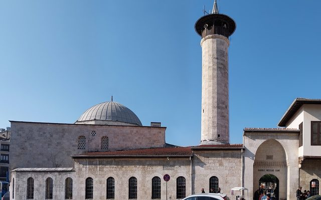
Habib-i Neccar CamiiHatay · Osmanlı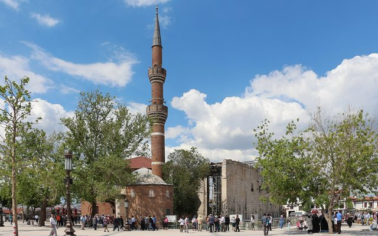
Hacı Bayram Veli CamiiAnkara · Osmanlı Harşena KalesiAmasya · Pontus / Osmanlı
Harşena KalesiAmasya · Pontus / Osmanlı Hasan Paşa HanıDiyarbakır · Osmanlı
Hasan Paşa HanıDiyarbakır · Osmanlı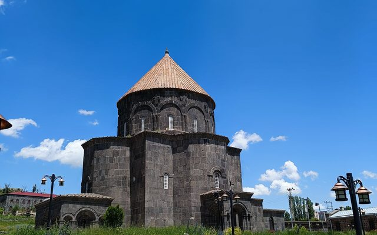
Havariler (Kümbet) CamiiKars · Bagratlı / Osmanlı Helles Anıtı (Seddülbahir)Çanakkale · Birinci Dünya Savaşı
Helles Anıtı (Seddülbahir)Çanakkale · Birinci Dünya Savaşı Hoşap KalesiVan · Osmanlı (17. yy)
Hoşap KalesiVan · Osmanlı (17. yy) Ihlamur Kasrıİstanbul · Osmanlı (19. yy)
Ihlamur Kasrıİstanbul · Osmanlı (19. yy) Irgandı KöprüsüBursa · OsmanlıKadifekaleİzmir · Helenistik / OsmanlıKariye Camii (Khora)İstanbul · Bizans / OsmanlıKars KalesiKars · Selçuklu / OsmanlıKemaliye (Eğin) Tarihi KentiErzincan · Osmanlı
Irgandı KöprüsüBursa · OsmanlıKadifekaleİzmir · Helenistik / OsmanlıKariye Camii (Khora)İstanbul · Bizans / OsmanlıKars KalesiKars · Selçuklu / OsmanlıKemaliye (Eğin) Tarihi KentiErzincan · Osmanlı Kilitbahir KalesiÇanakkale · Osmanlı
Kilitbahir KalesiÇanakkale · Osmanlı Koza HanBursa · Osmanlı
Koza HanBursa · Osmanlı Küçüksu Kasrıİstanbul · Osmanlı (19. yy)Kız Kulesiİstanbul · Bizans / OsmanlıLala Mustafa Paşa CamiiGazimağusa · Lüzinyan / Osmanlı
Küçüksu Kasrıİstanbul · Osmanlı (19. yy)Kız Kulesiİstanbul · Bizans / OsmanlıLala Mustafa Paşa CamiiGazimağusa · Lüzinyan / Osmanlı Lozan Anıtı ve Karaağaç GarıEdirne · Osmanlı / CumhuriyetMamure KalesiMersin · Ortaçağ / Osmanlı
Lozan Anıtı ve Karaağaç GarıEdirne · Osmanlı / CumhuriyetMamure KalesiMersin · Ortaçağ / Osmanlı Maslak Kasırlarıİstanbul · Osmanlı (19. yy)
Maslak Kasırlarıİstanbul · Osmanlı (19. yy) Meriç KöprüsüEdirne · Osmanlı (19. yy)
Meriç KöprüsüEdirne · Osmanlı (19. yy) Mihrimah Sultan Camii (Edirnekapı)İstanbul · Osmanlı (16. yy)
Mihrimah Sultan Camii (Edirnekapı)İstanbul · Osmanlı (16. yy) Muradiye KülliyesiBursa · Osmanlı
Muradiye KülliyesiBursa · Osmanlı Mustafapaşa (Sinasos) KöyüNevşehir · OsmanlıNakoleia ve Seyitgazi KülliyesiEskişehir · Selçuklu / Osmanlı
Mustafapaşa (Sinasos) KöyüNevşehir · OsmanlıNakoleia ve Seyitgazi KülliyesiEskişehir · Selçuklu / Osmanlı Rami Kışlası (Rami Kütüphanesi)İstanbul · Osmanlı (18. yy)
Rami Kışlası (Rami Kütüphanesi)İstanbul · Osmanlı (18. yy) Rumeli Hisarıİstanbul · Osmanlı
Rumeli Hisarıİstanbul · Osmanlı Rüstem Paşa Camiiİstanbul · Osmanlı (16. yy)Selimiye CamiiLefkoşa · Lüzinyan / OsmanlıSille ve Aya Elenia KilisesiKonya · Bizans / Osmanlı
Rüstem Paşa Camiiİstanbul · Osmanlı (16. yy)Selimiye CamiiLefkoşa · Lüzinyan / OsmanlıSille ve Aya Elenia KilisesiKonya · Bizans / Osmanlı St. Antuan Kilisesiİstanbul · Osmanlı (20. yy)St. Barnabas ManastırıGazimağusa · Erken Hristiyanlık / OsmanlıStratonikeia ÖrenyeriMuğla · Helenistik – Osmanlı
St. Antuan Kilisesiİstanbul · Osmanlı (20. yy)St. Barnabas ManastırıGazimağusa · Erken Hristiyanlık / OsmanlıStratonikeia ÖrenyeriMuğla · Helenistik – Osmanlı Sultanahmet Camii (Mavi Cami)İstanbul · Osmanlı (17. yy)
Sultanahmet Camii (Mavi Cami)İstanbul · Osmanlı (17. yy) Surp Giragos Ermeni KilisesiDiyarbakır · Osmanlı (19. yy)
Surp Giragos Ermeni KilisesiDiyarbakır · Osmanlı (19. yy) Süleymaniye Camiiİstanbul · Osmanlı (16. yy)Sümela ManastırıTrabzon · Bizans – 20. yy
Süleymaniye Camiiİstanbul · Osmanlı (16. yy)Sümela ManastırıTrabzon · Bizans – 20. yy Tarihi CezaeviSinop · Osmanlı / CumhuriyetTokat TaşhanTokat · Osmanlı
Tarihi CezaeviSinop · Osmanlı / CumhuriyetTokat TaşhanTokat · Osmanlı Topkapı Sarayıİstanbul · Osmanlı (15.–19. yy)Van KalesiVan · Urartu – OsmanlıYedikule Hisarıİstanbul · Bizans / Osmanlı
Topkapı Sarayıİstanbul · Osmanlı (15.–19. yy)Van KalesiVan · Urartu – OsmanlıYedikule Hisarıİstanbul · Bizans / Osmanlı Yörük KöyüKarabük · Osmanlı
Yörük KöyüKarabük · Osmanlı Yıldız Sarayıİstanbul · Osmanlı (19. yy)
Yıldız Sarayıİstanbul · Osmanlı (19. yy) İshak Paşa SarayıAğrı · Osmanlıİstanbul Galata Kulesiİstanbul · Ceneviz / Osmanlı
İshak Paşa SarayıAğrı · Osmanlıİstanbul Galata Kulesiİstanbul · Ceneviz / Osmanlı Şehzade Camiiİstanbul · Osmanlı (16. yy)
Şehzade Camiiİstanbul · Osmanlı (16. yy) Şirince Köyüİzmir · Osmanlı
Şirince Köyüİzmir · Osmanlı Adalar Müzesiİstanbul · Osmanlı / Cumhuriyet
Adalar Müzesiİstanbul · Osmanlı / Cumhuriyet Adam Mickiewicz Müzesiİstanbul · Osmanlı
Adam Mickiewicz Müzesiİstanbul · Osmanlı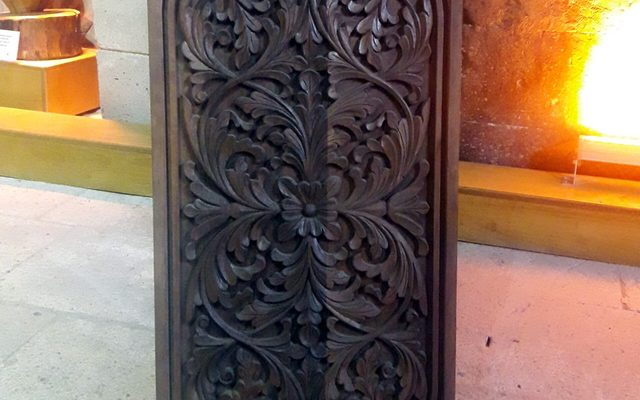
Ahşap Eserler MüzesiEskişehir · Osmanlı / Cumhuriyet Antalya Etnografya MüzesiAntalya · Osmanlı / Yakın Dönem
Antalya Etnografya MüzesiAntalya · Osmanlı / Yakın Dönem Askeri Müzeİstanbul · Osmanlı / Cumhuriyet
Askeri Müzeİstanbul · Osmanlı / Cumhuriyet Atatürk, Redif ve Etnografya MüzesiKocaeli · Osmanlı / Cumhuriyet
Atatürk, Redif ve Etnografya MüzesiKocaeli · Osmanlı / Cumhuriyet Av Köşkü Saray MüzesiKocaeli · OsmanlıAyasofya Tarih ve Deneyim Müzesiİstanbul · Bizans / Osmanlı
Av Köşkü Saray MüzesiKocaeli · OsmanlıAyasofya Tarih ve Deneyim Müzesiİstanbul · Bizans / Osmanlı Beyazıt Hamam Kültürü Müzesiİstanbul · Osmanlı
Beyazıt Hamam Kültürü Müzesiİstanbul · Osmanlı Beykoz Cam ve Billur Müzesiİstanbul · Osmanlı
Beykoz Cam ve Billur Müzesiİstanbul · Osmanlı Beypazarı Yaşayan MüzeAnkara · OsmanlıBeşkonaklar Etnografya Müzesi ve Geleneksel Malatya EviMalatya · Osmanlı / Yakın Dönem
Beypazarı Yaşayan MüzeAnkara · OsmanlıBeşkonaklar Etnografya Müzesi ve Geleneksel Malatya EviMalatya · Osmanlı / Yakın Dönem Birgi Çakırağa Konağıİzmir · OsmanlıBitlis Etnografya MüzesiBitlis · Osmanlı / Yakın DönemBodrum Sualtı Arkeoloji MüzesiMuğla · Tunç Çağı – Osmanlı
Birgi Çakırağa Konağıİzmir · OsmanlıBitlis Etnografya MüzesiBitlis · Osmanlı / Yakın DönemBodrum Sualtı Arkeoloji MüzesiMuğla · Tunç Çağı – Osmanlı Bursa Türk İslam Eserleri MüzesiBursa · Osmanlı
Bursa Türk İslam Eserleri MüzesiBursa · Osmanlı Cahit Sıtkı Tarancı Evi Etnografya MüzesiDiyarbakır · Osmanlı
Cahit Sıtkı Tarancı Evi Etnografya MüzesiDiyarbakır · Osmanlı Derviş Paşa KonağıLefkoşa · Osmanlı (19. yy)Edirne Hıdırlık Tabya Balkan Tarihi MüzesiEdirne · OsmanlıEmine Göğüş Mutfak MüzesiGaziantep · Osmanlı / GünümüzEtnografya MüzesiAnkara · Selçuklu / Osmanlı / Cumhuriyet
Derviş Paşa KonağıLefkoşa · Osmanlı (19. yy)Edirne Hıdırlık Tabya Balkan Tarihi MüzesiEdirne · OsmanlıEmine Göğüş Mutfak MüzesiGaziantep · Osmanlı / GünümüzEtnografya MüzesiAnkara · Selçuklu / Osmanlı / Cumhuriyet Galata Mevlevihanesi Müzesiİstanbul · Osmanlı
Galata Mevlevihanesi Müzesiİstanbul · Osmanlı Gelibolu Savaş MüzesiÇanakkale · Birinci Dünya Savaşı
Gelibolu Savaş MüzesiÇanakkale · Birinci Dünya Savaşı Girne İkon MüzesiGirne · Osmanlı (19. yy)
Girne İkon MüzesiGirne · Osmanlı (19. yy) Güpgüpoğlu Konağı Etnografya MüzesiKayseri · OsmanlıHacıbektaş MüzesiNevşehir · Selçuklu / OsmanlıHamidiye Tabyası ve Çanakkale Savaşları Tarihi MüzesiÇanakkale · Osmanlı / Birinci Dünya SavaşıHasan Süzer Etnografya MüzesiGaziantep · Osmanlı
Güpgüpoğlu Konağı Etnografya MüzesiKayseri · OsmanlıHacıbektaş MüzesiNevşehir · Selçuklu / OsmanlıHamidiye Tabyası ve Çanakkale Savaşları Tarihi MüzesiÇanakkale · Osmanlı / Birinci Dünya SavaşıHasan Süzer Etnografya MüzesiGaziantep · Osmanlı Hazeranlar KonağıAmasya · OsmanlıJandarma MüzesiAnkara · Osmanlı / Cumhuriyet
Hazeranlar KonağıAmasya · OsmanlıJandarma MüzesiAnkara · Osmanlı / Cumhuriyet Kabatepe Tanıtım MerkeziÇanakkale · Birinci Dünya SavaşıKarabük Safranbolu MüzesiKarabük · Osmanlı
Kabatepe Tanıtım MerkeziÇanakkale · Birinci Dünya SavaşıKarabük Safranbolu MüzesiKarabük · Osmanlı Kars Kafkas Cephesi Harp Tarihi MüzesiKars · Osmanlı / Birinci Dünya Savaşı
Kars Kafkas Cephesi Harp Tarihi MüzesiKars · Osmanlı / Birinci Dünya Savaşı Kilitbahir Kale MüzesiÇanakkale · OsmanlıKonya Etnografya MüzesiKonya · Osmanlı / Yakın Dönem
Kilitbahir Kale MüzesiÇanakkale · OsmanlıKonya Etnografya MüzesiKonya · Osmanlı / Yakın Dönem Kossouth Evi MüzesiKütahya · Osmanlı
Kossouth Evi MüzesiKütahya · Osmanlı Kossuth Evi MüzesiKütahya · Osmanlı
Kossuth Evi MüzesiKütahya · Osmanlı Kuruköprü Anıt Müzesi ve Geleneksel Adana EviAdana · Osmanlı / CumhuriyetLatifoğlu KonağıTokat · Osmanlı (19. yy)Livapaşa Konağı Etnografya MüzesiKastamonu · Osmanlı
Kuruköprü Anıt Müzesi ve Geleneksel Adana EviAdana · Osmanlı / CumhuriyetLatifoğlu KonağıTokat · Osmanlı (19. yy)Livapaşa Konağı Etnografya MüzesiKastamonu · Osmanlı Lületaşı MüzesiEskişehir · Osmanlı / GünümüzMaden MüzesiZonguldak · 19.–20. yyMarmaris MüzesiMuğla · OsmanlıMevlana MüzesiKonya · Selçuklu / Osmanlı
Lületaşı MüzesiEskişehir · Osmanlı / GünümüzMaden MüzesiZonguldak · 19.–20. yyMarmaris MüzesiMuğla · OsmanlıMevlana MüzesiKonya · Selçuklu / Osmanlı Mevlevi Tekke MüzesiLefkoşa · Osmanlı (17. yy)Mevlevihane MüzesiAntalya · Selçuklu / Osmanlı
Mevlevi Tekke MüzesiLefkoşa · Osmanlı (17. yy)Mevlevihane MüzesiAntalya · Selçuklu / Osmanlı Mimar Sinan ve Kent MüzesiKayseri · Osmanlı
Mimar Sinan ve Kent MüzesiKayseri · Osmanlı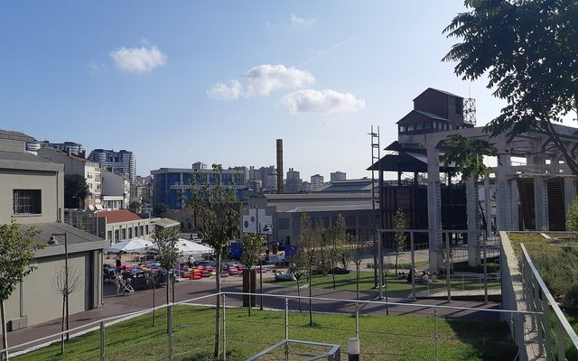
Müze Gazhaneİstanbul · Osmanlı / Günümüz Namazgâh Tabyası MüzesiÇanakkale · Osmanlı / Birinci Dünya SavaşıNamık Kemal Evi MüzesiTekirdağ · OsmanlıNamık Kemal Zindanı ve MüzesiGazimağusa · Venedik / Osmanlı
Namazgâh Tabyası MüzesiÇanakkale · Osmanlı / Birinci Dünya SavaşıNamık Kemal Evi MüzesiTekirdağ · OsmanlıNamık Kemal Zindanı ve MüzesiGazimağusa · Venedik / Osmanlı Necmi İğe Evi Etnografya MüzesiEdirne · OsmanlıNilüfer Hatun İmareti Türk İslam Eserleri MüzesiBursa · Osmanlı
Necmi İğe Evi Etnografya MüzesiEdirne · OsmanlıNilüfer Hatun İmareti Türk İslam Eserleri MüzesiBursa · Osmanlı Osman Hamdi Bey MüzesiKocaeli · OsmanlıOsmanlı Evi MüzesiBursa · Osmanlı
Osman Hamdi Bey MüzesiKocaeli · OsmanlıOsmanlı Evi MüzesiBursa · Osmanlı Panorama 1453 Tarih Müzesiİstanbul · Osmanlı
Panorama 1453 Tarih Müzesiİstanbul · Osmanlı Pierre Loti Müzesiİstanbul · Osmanlı
Pierre Loti Müzesiİstanbul · Osmanlı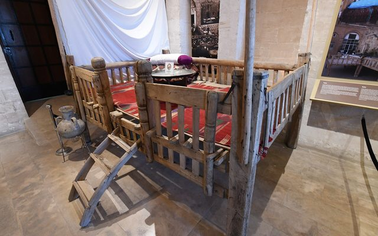
Sakıp Sabancı Mardin Kent MüzesiMardin · Osmanlı / Cumhuriyet Sakıp Sabancı Müzesiİstanbul · Osmanlı / Çağdaş
Sakıp Sabancı Müzesiİstanbul · Osmanlı / Çağdaş Salt Galataİstanbul · Osmanlı / GünümüzSinop Arslantorunlar Etnografya MüzesiSinop · Osmanlı
Salt Galataİstanbul · Osmanlı / GünümüzSinop Arslantorunlar Etnografya MüzesiSinop · Osmanlı Sultan Ii. Bayezid Külliyesi Sağlık MüzesiEdirne · Osmanlı
Sultan Ii. Bayezid Külliyesi Sağlık MüzesiEdirne · Osmanlı Söğüt Ertuğrul Gazi MüzesiBilecik · OsmanlıTaksiyarhis Anıt MüzesiBalıkesir · OsmanlıTarsus St. Paul Anıt MüzesiMersin · Osmanlı / Hristiyanlık
Söğüt Ertuğrul Gazi MüzesiBilecik · OsmanlıTaksiyarhis Anıt MüzesiBalıkesir · OsmanlıTarsus St. Paul Anıt MüzesiMersin · Osmanlı / Hristiyanlık Tofaş Anadolu Arabaları MüzesiBursa · Osmanlı / CumhuriyetTokat Atatürk Evi ve Etnografya MüzesiTokat · Osmanlı / Cumhuriyet
Tofaş Anadolu Arabaları MüzesiBursa · Osmanlı / CumhuriyetTokat Atatürk Evi ve Etnografya MüzesiTokat · Osmanlı / Cumhuriyet Türk Vakıf Hat Sanatları Müzesiİstanbul · OsmanlıTürk ve İslam Eserleri Müzesiİstanbul · Selçuklu / OsmanlıTürk İslam Eserleri MüzesiEdirne · Osmanlı
Türk Vakıf Hat Sanatları Müzesiİstanbul · OsmanlıTürk ve İslam Eserleri Müzesiİstanbul · Selçuklu / OsmanlıTürk İslam Eserleri MüzesiEdirne · Osmanlı Türk İslam Eserleri ve Etnografya MüzesiErzurum · İlhanlı / Osmanlı
Türk İslam Eserleri ve Etnografya MüzesiErzurum · İlhanlı / Osmanlı Yenişehir Şemaki Evi MüzesiBursa · Osmanlı
Yenişehir Şemaki Evi MüzesiBursa · Osmanlı Yıldız Porselen Fabrikasıİstanbul · Osmanlı
Yıldız Porselen Fabrikasıİstanbul · Osmanlı Ziya Gökalp MüzesiDiyarbakır · Osmanlı
Ziya Gökalp MüzesiDiyarbakır · Osmanlı Çamlık Buharlı Lokomotif Müzesiİzmir · Osmanlı / Cumhuriyet
Çamlık Buharlı Lokomotif Müzesiİzmir · Osmanlı / Cumhuriyet Çanakkale Deniz MüzesiÇanakkale · Birinci Dünya SavaşıÇanakkale Destanı Tanıtım MerkeziÇanakkale · Birinci Dünya SavaşıÇanakkale Hilal-i Ahmer Canlandırma AlanıÇanakkale · Birinci Dünya Savaşı
Çanakkale Deniz MüzesiÇanakkale · Birinci Dünya SavaşıÇanakkale Destanı Tanıtım MerkeziÇanakkale · Birinci Dünya SavaşıÇanakkale Hilal-i Ahmer Canlandırma AlanıÇanakkale · Birinci Dünya Savaşı Çengelhan Rahmi M. Koç MüzesiAnkara · Osmanlı / Cumhuriyet
Çengelhan Rahmi M. Koç MüzesiAnkara · Osmanlı / Cumhuriyet Çeşme Müzesiİzmir · Osmanlı
Çeşme Müzesiİzmir · Osmanlı Çini MüzesiKütahya · Germiyanoğulları / Osmanlı
Çini MüzesiKütahya · Germiyanoğulları / Osmanlı İstanbul Deniz Müzesiİstanbul · Osmanlı / CumhuriyetŞanlıurfa Arkeoloji MüzesiŞanlıurfa · Neolitik – Osmanlı
İstanbul Deniz Müzesiİstanbul · Osmanlı / CumhuriyetŞanlıurfa Arkeoloji MüzesiŞanlıurfa · Neolitik – OsmanlıKurtuluş ve Cumhuriyet
1919 – günümüz · 140 yer
 Devlet MezarlığıAnkara · CumhuriyetEdirne Büyük SinagogEdirne · Osmanlı (20. yy)Fethiye Kayaköy ÖrenyeriMuğla · 19.–20. yy
Devlet MezarlığıAnkara · CumhuriyetEdirne Büyük SinagogEdirne · Osmanlı (20. yy)Fethiye Kayaköy ÖrenyeriMuğla · 19.–20. yy Gazi KöşküDiyarbakır · Akkoyunlu / CumhuriyetLozan Anıtı ve Karaağaç GarıEdirne · Osmanlı / CumhuriyetSt. Antuan Kilisesiİstanbul · Osmanlı (20. yy)Sümela ManastırıTrabzon · Bizans – 20. yyTarihi CezaeviSinop · Osmanlı / Cumhuriyet
Gazi KöşküDiyarbakır · Akkoyunlu / CumhuriyetLozan Anıtı ve Karaağaç GarıEdirne · Osmanlı / CumhuriyetSt. Antuan Kilisesiİstanbul · Osmanlı (20. yy)Sümela ManastırıTrabzon · Bizans – 20. yyTarihi CezaeviSinop · Osmanlı / Cumhuriyet Varda KöprüsüAdana · Cumhuriyet öncesi (1912)
Varda KöprüsüAdana · Cumhuriyet öncesi (1912) 15 Temmuz Demokrasi MüzesiAnkara · GünümüzAdalar Müzesiİstanbul · Osmanlı / Cumhuriyet
15 Temmuz Demokrasi MüzesiAnkara · GünümüzAdalar Müzesiİstanbul · Osmanlı / Cumhuriyet Adana Atatürk Evi MüzesiAdana · CumhuriyetAdatepe Zeytinyağı MüzesiÇanakkale · Günümüz
Adana Atatürk Evi MüzesiAdana · CumhuriyetAdatepe Zeytinyağı MüzesiÇanakkale · Günümüz Ahmet Piriştina Kent Arşivi ve Müzesiİzmir · CumhuriyetAhşap Eserler MüzesiEskişehir · Osmanlı / CumhuriyetAlaeddin Yavaşça Müze EviKilis · Cumhuriyet
Ahmet Piriştina Kent Arşivi ve Müzesiİzmir · CumhuriyetAhşap Eserler MüzesiEskişehir · Osmanlı / CumhuriyetAlaeddin Yavaşça Müze EviKilis · Cumhuriyet Alagöz Karargâh MüzesiAnkara · Kurtuluş SavaşıAlanya Atatürk Evi MüzesiAntalya · CumhuriyetAlaçam Mübadele MüzesiSamsun · Cumhuriyet
Alagöz Karargâh MüzesiAnkara · Kurtuluş SavaşıAlanya Atatürk Evi MüzesiAntalya · CumhuriyetAlaçam Mübadele MüzesiSamsun · Cumhuriyet Ankara Oyuncak MüzesiAnkara · Cumhuriyet
Ankara Oyuncak MüzesiAnkara · Cumhuriyet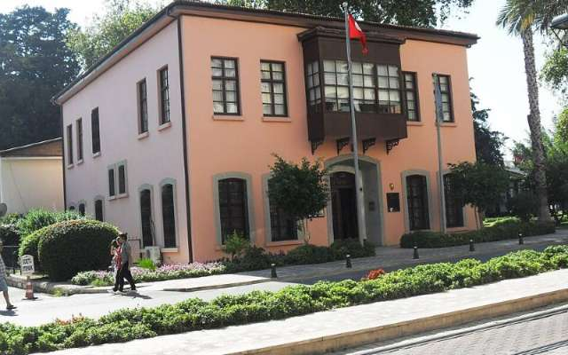
Antalya Atatürk Evi MüzesiAntalya · CumhuriyetAntalya Etnografya MüzesiAntalya · Osmanlı / Yakın Dönem Antalya Oyuncak MüzesiAntalya · Günümüz
Antalya Oyuncak MüzesiAntalya · Günümüz AnıtkabirAnkara · Cumhuriyet
AnıtkabirAnkara · Cumhuriyet Ara Güler Müzesiİstanbul · Cumhuriyet
Ara Güler Müzesiİstanbul · Cumhuriyet Arkas Sanat Merkeziİzmir · Günümüz
Arkas Sanat Merkeziİzmir · Günümüz Arterİstanbul · GünümüzAskeri Müzeİstanbul · Osmanlı / CumhuriyetAtatürk Evi MüzesiDiyarbakır · Cumhuriyet
Arterİstanbul · GünümüzAskeri Müzeİstanbul · Osmanlı / CumhuriyetAtatürk Evi MüzesiDiyarbakır · Cumhuriyet Atatürk Konutu ve Demiryolları MüzesiAnkara · Cumhuriyet
Atatürk Konutu ve Demiryolları MüzesiAnkara · Cumhuriyet Atatürk Müzesi (Şişli)İstanbul · CumhuriyetAtatürk ve Etnografya MüzesiUşak · CumhuriyetAtatürk, Redif ve Etnografya MüzesiKocaeli · Osmanlı / Cumhuriyet
Atatürk Müzesi (Şişli)İstanbul · CumhuriyetAtatürk ve Etnografya MüzesiUşak · CumhuriyetAtatürk, Redif ve Etnografya MüzesiKocaeli · Osmanlı / Cumhuriyet Atlas 1948 İstanbul Sinema Müzesiİstanbul · Cumhuriyet / Çağdaş
Atlas 1948 İstanbul Sinema Müzesiİstanbul · Cumhuriyet / Çağdaş Aşık Veysel MüzesiSivas · Cumhuriyet
Aşık Veysel MüzesiSivas · Cumhuriyet Balıkesir Kuvâ-yı Milliye MüzesiBalıkesir · Cumhuriyet
Balıkesir Kuvâ-yı Milliye MüzesiBalıkesir · Cumhuriyet Bandırma Vapuru Gemi MüzesiSamsun · Cumhuriyet
Bandırma Vapuru Gemi MüzesiSamsun · Cumhuriyet Batı Cephesi Karargahı MüzesiKonya · Cumhuriyet
Batı Cephesi Karargahı MüzesiKonya · Cumhuriyet Bayburt Baksı MüzesiBayburt · ÇağdaşBeşkonaklar Etnografya Müzesi ve Geleneksel Malatya EviMalatya · Osmanlı / Yakın DönemBitlis Etnografya MüzesiBitlis · Osmanlı / Yakın DönemBoğatepe Peynir MüzesiKars · Günümüz
Bayburt Baksı MüzesiBayburt · ÇağdaşBeşkonaklar Etnografya Müzesi ve Geleneksel Malatya EviMalatya · Osmanlı / Yakın DönemBitlis Etnografya MüzesiBitlis · Osmanlı / Yakın DönemBoğatepe Peynir MüzesiKars · Günümüz Bursa Atatürk Evi MüzesiBursa · Cumhuriyet
Bursa Atatürk Evi MüzesiBursa · Cumhuriyet Cendere Sanat Müzesiİstanbul · Çağdaş Sanat
Cendere Sanat Müzesiİstanbul · Çağdaş Sanat CerModernAnkara · Günümüz
CerModernAnkara · Günümüz Cumhuriyet MüzesiAnkara · Cumhuriyet
Cumhuriyet MüzesiAnkara · Cumhuriyet Denizli Atatürk ve Etnografya MüzesiDenizli · Cumhuriyet
Denizli Atatürk ve Etnografya MüzesiDenizli · Cumhuriyet Devrim Arabaları MüzesiEskişehir · Cumhuriyet
Devrim Arabaları MüzesiEskişehir · Cumhuriyet Elgiz Çağdaş Sanat Müzesiİstanbul · GünümüzEmine Göğüş Mutfak MüzesiGaziantep · Osmanlı / Günümüz
Elgiz Çağdaş Sanat Müzesiİstanbul · GünümüzEmine Göğüş Mutfak MüzesiGaziantep · Osmanlı / Günümüz Erzurum Atatürk Evi MüzesiErzurum · CumhuriyetErzurum Resim Heykel MüzesiErzurum · Cumhuriyet / Çağdaş
Erzurum Atatürk Evi MüzesiErzurum · CumhuriyetErzurum Resim Heykel MüzesiErzurum · Cumhuriyet / Çağdaş Eskişehir Kurtuluş MüzesiEskişehir · CumhuriyetEtnografya MüzesiAnkara · Selçuklu / Osmanlı / Cumhuriyet
Eskişehir Kurtuluş MüzesiEskişehir · CumhuriyetEtnografya MüzesiAnkara · Selçuklu / Osmanlı / Cumhuriyet Eğitim Karikatürleri MüzesiEskişehir · Cumhuriyet
Eğitim Karikatürleri MüzesiEskişehir · Cumhuriyet Fenerbahçe Müzesiİstanbul · Cumhuriyet
Fenerbahçe Müzesiİstanbul · Cumhuriyet Florya Atatürk Deniz Köşküİstanbul · Cumhuriyet
Florya Atatürk Deniz Köşküİstanbul · Cumhuriyet Gazi MüzesiSamsun · Cumhuriyet (1919)
Gazi MüzesiSamsun · Cumhuriyet (1919) Gaziantep Savunması ve Kahramanlık Panorama MüzesiGaziantep · Cumhuriyet
Gaziantep Savunması ve Kahramanlık Panorama MüzesiGaziantep · Cumhuriyet Gökyay Vakfı Satranç MüzesiAnkara · Günümüz
Gökyay Vakfı Satranç MüzesiAnkara · Günümüz Hafıza 15 Temmuz Müzesiİstanbul · Günümüz
Hafıza 15 Temmuz Müzesiİstanbul · Günümüz Hava Kuvvetleri MüzesiAnkara · CumhuriyetHavza Atatürk Evi MüzesiSamsun · CumhuriyetHilmi Nakipoğlu Fotoğraf Makineleri Müzesiİstanbul · Günümüz
Hava Kuvvetleri MüzesiAnkara · CumhuriyetHavza Atatürk Evi MüzesiSamsun · CumhuriyetHilmi Nakipoğlu Fotoğraf Makineleri Müzesiİstanbul · Günümüz Iğdır Soykırım Anıtı ve MüzesiIğdır · CumhuriyetJandarma MüzesiAnkara · Osmanlı / CumhuriyetKahramankazan 15 Temmuz Şehitleri ve Demokrasi MüzesiAnkara · GünümüzKandilli Deprem Müzesiİstanbul · Cumhuriyet
Iğdır Soykırım Anıtı ve MüzesiIğdır · CumhuriyetJandarma MüzesiAnkara · Osmanlı / CumhuriyetKahramankazan 15 Temmuz Şehitleri ve Demokrasi MüzesiAnkara · GünümüzKandilli Deprem Müzesiİstanbul · Cumhuriyet Karacasu Etnografya MüzesiAydın · Yakın Dönem
Karacasu Etnografya MüzesiAydın · Yakın Dönem Kayseri Atatürk Evi MüzesiKayseri · Cumhuriyet
Kayseri Atatürk Evi MüzesiKayseri · Cumhuriyet Kemal Sunal Müzesiİstanbul · Cumhuriyet
Kemal Sunal Müzesiİstanbul · Cumhuriyet Key Museum (Klasik Otomobil Müzesi)İzmir · Günümüz
Key Museum (Klasik Otomobil Müzesi)İzmir · Günümüz Konya Atatürk Evi MüzesiKonya · CumhuriyetKonya Etnografya MüzesiKonya · Osmanlı / Yakın DönemKurtuluş Savaşı MüzesiAnkara · CumhuriyetKuruköprü Anıt Müzesi ve Geleneksel Adana EviAdana · Osmanlı / Cumhuriyet
Konya Atatürk Evi MüzesiKonya · CumhuriyetKonya Etnografya MüzesiKonya · Osmanlı / Yakın DönemKurtuluş Savaşı MüzesiAnkara · CumhuriyetKuruköprü Anıt Müzesi ve Geleneksel Adana EviAdana · Osmanlı / Cumhuriyet Kuva-Yi Milliye MüzesiBalıkesir · Cumhuriyet
Kuva-Yi Milliye MüzesiBalıkesir · Cumhuriyet Kâzım Karabekir Paşa Müzesiİstanbul · Kurtuluş Savaşı
Kâzım Karabekir Paşa Müzesiİstanbul · Kurtuluş Savaşı Latife Hanım Köşkü Anı Eviİzmir · CumhuriyetLületaşı MüzesiEskişehir · Osmanlı / GünümüzMaden MüzesiZonguldak · 19.–20. yyMalatya Atatürk Anı Evi ve Etnoğrafya MüzesiMalatya · Cumhuriyet
Latife Hanım Köşkü Anı Eviİzmir · CumhuriyetLületaşı MüzesiEskişehir · Osmanlı / GünümüzMaden MüzesiZonguldak · 19.–20. yyMalatya Atatürk Anı Evi ve Etnoğrafya MüzesiMalatya · Cumhuriyet Masumiyet Müzesiİstanbul · GünümüzMehmet Akif Ersoy Edebiyat Müze KütüphanesiAnkara · Cumhuriyet
Masumiyet Müzesiİstanbul · GünümüzMehmet Akif Ersoy Edebiyat Müze KütüphanesiAnkara · Cumhuriyet Mehmet Akif Ersoy Hatıra Eviİstanbul · Cumhuriyet
Mehmet Akif Ersoy Hatıra Eviİstanbul · Cumhuriyet Mersin Atatürk Evi MüzesiMersin · Cumhuriyet
Mersin Atatürk Evi MüzesiMersin · Cumhuriyet Miniatürkİstanbul · Günümüz
Miniatürkİstanbul · Günümüz Mke Sanayi ve Teknoloji MüzesiAnkara · Cumhuriyet
Mke Sanayi ve Teknoloji MüzesiAnkara · Cumhuriyet Mudanya Mütareke Evi MüzesiBursa · CumhuriyetMüze Gazhaneİstanbul · Osmanlı / GünümüzNevşehir Hacıbektaş Atatürk Evi MüzesiNevşehir · Cumhuriyet
Mudanya Mütareke Evi MüzesiBursa · CumhuriyetMüze Gazhaneİstanbul · Osmanlı / GünümüzNevşehir Hacıbektaş Atatürk Evi MüzesiNevşehir · Cumhuriyet Odtü Bilim ve Teknoloji MüzesiAnkara · Günümüz
Odtü Bilim ve Teknoloji MüzesiAnkara · Günümüz Odunpazarı Modern MüzeEskişehir · Günümüz
Odunpazarı Modern MüzeEskişehir · Günümüz Orhan Kemal Müzesiİstanbul · Cumhuriyet
Orhan Kemal Müzesiİstanbul · Cumhuriyet Rahmi M. Koç Müzesiİstanbul · Yakın Dönem
Rahmi M. Koç Müzesiİstanbul · Yakın Dönem Resim Heykel MüzesiAnkara · Cumhuriyet
Resim Heykel MüzesiAnkara · Cumhuriyet Rize Atatürk Evi MüzesiRize · Cumhuriyet
Rize Atatürk Evi MüzesiRize · Cumhuriyet Sait Faik Abasıyanık Müzesiİstanbul · CumhuriyetSakıp Sabancı Mardin Kent MüzesiMardin · Osmanlı / CumhuriyetSakıp Sabancı Müzesiİstanbul · Osmanlı / ÇağdaşSalt Galataİstanbul · Osmanlı / Günümüz
Sait Faik Abasıyanık Müzesiİstanbul · CumhuriyetSakıp Sabancı Mardin Kent MüzesiMardin · Osmanlı / CumhuriyetSakıp Sabancı Müzesiİstanbul · Osmanlı / ÇağdaşSalt Galataİstanbul · Osmanlı / Günümüz Seka Kâğıt MüzesiKocaeli · Cumhuriyet
Seka Kâğıt MüzesiKocaeli · Cumhuriyet Silifke Atatürk Evi ve Etnografya MüzesiMersin · CumhuriyetSilvan Atatürk Evi MüzesiDiyarbakır · Cumhuriyet
Silifke Atatürk Evi ve Etnografya MüzesiMersin · CumhuriyetSilvan Atatürk Evi MüzesiDiyarbakır · Cumhuriyet Sivas Atatürk ve Kongre MüzesiSivas · Cumhuriyet (1919)Tayfun Talipoğlu Daktilo MüzesiEskişehir · Günümüz
Sivas Atatürk ve Kongre MüzesiSivas · Cumhuriyet (1919)Tayfun Talipoğlu Daktilo MüzesiEskişehir · Günümüz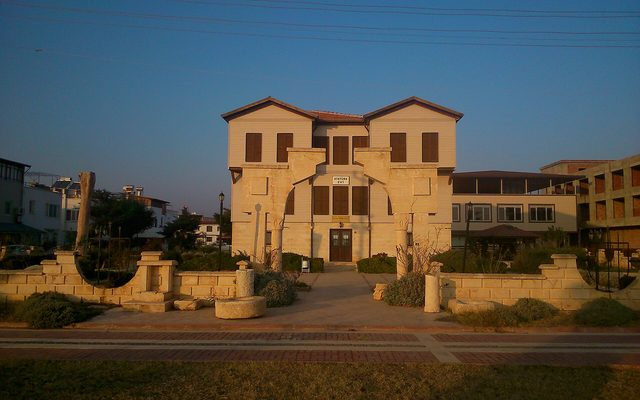
Taşucu Atatürk EviMersin · Cumhuriyet Tcdd Açık Hava Buharlı Lokomotif MüzesiAnkara · Cumhuriyet
Tcdd Açık Hava Buharlı Lokomotif MüzesiAnkara · Cumhuriyet Tcdd Malıköy Tren İstasyonu MüzesiAnkara · Kurtuluş SavaşıTekirdağ Muratlı Atatürk Evi MüzesiTekirdağ · CumhuriyetTofaş Anadolu Arabaları MüzesiBursa · Osmanlı / CumhuriyetTokat Atatürk Evi ve Etnografya MüzesiTokat · Osmanlı / Cumhuriyet
Tcdd Malıköy Tren İstasyonu MüzesiAnkara · Kurtuluş SavaşıTekirdağ Muratlı Atatürk Evi MüzesiTekirdağ · CumhuriyetTofaş Anadolu Arabaları MüzesiBursa · Osmanlı / CumhuriyetTokat Atatürk Evi ve Etnografya MüzesiTokat · Osmanlı / Cumhuriyet Trabzon Atatürk KöşküTrabzon · Cumhuriyet
Trabzon Atatürk KöşküTrabzon · Cumhuriyet Trabzon Müzesi (Kostaki Konağı)Trabzon · 20. yy başı / Çok Dönemli
Trabzon Müzesi (Kostaki Konağı)Trabzon · 20. yy başı / Çok Dönemli Türk Hava Kurumu MüzesiAnkara · Cumhuriyet
Türk Hava Kurumu MüzesiAnkara · Cumhuriyet Türkiye İş Bankası Müzesiİstanbul · Cumhuriyet
Türkiye İş Bankası Müzesiİstanbul · Cumhuriyet Ulucanlar Cezaevi MüzesiAnkara · Cumhuriyet
Ulucanlar Cezaevi MüzesiAnkara · Cumhuriyet Yahya Kemal Müzesiİstanbul · Cumhuriyet
Yahya Kemal Müzesiİstanbul · Cumhuriyet Yörük Ali Efe Evi MüzesiAydın · Cumhuriyet
Yörük Ali Efe Evi MüzesiAydın · Cumhuriyet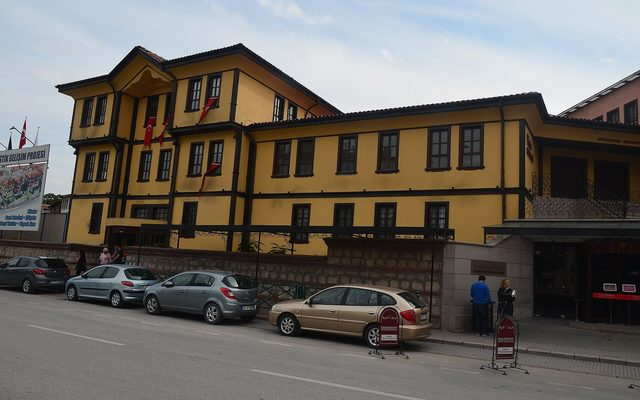
Yılmaz Büyükerşen Balmumu Heykeller MüzesiEskişehir · Günümüz Zafer MüzesiAfyonkarahisar · Cumhuriyet
Zafer MüzesiAfyonkarahisar · Cumhuriyet Zeki Müren Sanat MüzesiMuğla · Cumhuriyet
Zeki Müren Sanat MüzesiMuğla · Cumhuriyet santralistanbul Enerji Müzesiİstanbul · CumhuriyetÇamlık Buharlı Lokomotif Müzesiİzmir · Osmanlı / Cumhuriyet
santralistanbul Enerji Müzesiİstanbul · CumhuriyetÇamlık Buharlı Lokomotif Müzesiİzmir · Osmanlı / Cumhuriyet Çatalca Mübadele Müzesiİstanbul · Cumhuriyet
Çatalca Mübadele Müzesiİstanbul · Cumhuriyet Çağdaş Cam Sanatları MüzesiEskişehir · GünümüzÇengelhan Rahmi M. Koç MüzesiAnkara · Osmanlı / Cumhuriyet
Çağdaş Cam Sanatları MüzesiEskişehir · GünümüzÇengelhan Rahmi M. Koç MüzesiAnkara · Osmanlı / Cumhuriyet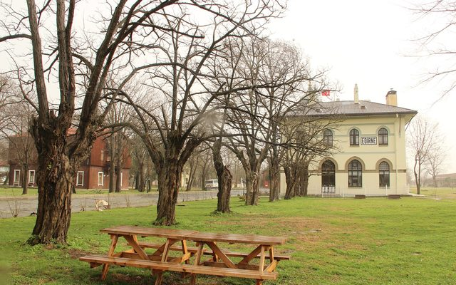
İlhan Koman Heykel ve Resim MüzesiEdirne · Cumhuriyet İlter Uzel Tıp ve Diş Hekimliği MüzesiAdana · Cumhuriyetİnönü Savaşları Karargâh MüzesiEskişehir · Cumhuriyet
İlter Uzel Tıp ve Diş Hekimliği MüzesiAdana · Cumhuriyetİnönü Savaşları Karargâh MüzesiEskişehir · Cumhuriyet İsmet İnönü Evi Müzesiİstanbul · Cumhuriyetİstanbul Deniz Müzesiİstanbul · Osmanlı / Cumhuriyet
İsmet İnönü Evi Müzesiİstanbul · Cumhuriyetİstanbul Deniz Müzesiİstanbul · Osmanlı / Cumhuriyet İstanbul Havacılık Müzesiİstanbul · Cumhuriyet
İstanbul Havacılık Müzesiİstanbul · Cumhuriyet İstanbul Modernİstanbul · Cumhuriyet / Çağdaş
İstanbul Modernİstanbul · Cumhuriyet / Çağdaş İstanbul Oyuncak Müzesiİstanbul · Günümüzİzmir Atatürk Müzesiİzmir · Cumhuriyet
İstanbul Oyuncak Müzesiİstanbul · Günümüzİzmir Atatürk Müzesiİzmir · Cumhuriyet İzmir Kültür Sanat Fabrikasıİzmir · Cumhuriyet / Çağdaşİzmir Resim Heykel Müzesiİzmir · Cumhuriyet / Çağdaş
İzmir Kültür Sanat Fabrikasıİzmir · Cumhuriyet / Çağdaşİzmir Resim Heykel Müzesiİzmir · Cumhuriyet / Çağdaş İzmit Deprem Anma ve Farkındalık MüzesiKocaeli · Günümüz
İzmit Deprem Anma ve Farkındalık MüzesiKocaeli · Günümüz Şebinkarahisar Atatürk Evi MüzesiGiresun · Cumhuriyet
Şebinkarahisar Atatürk Evi MüzesiGiresun · Cumhuriyet